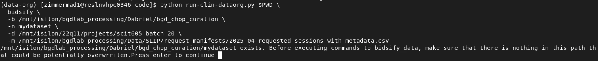
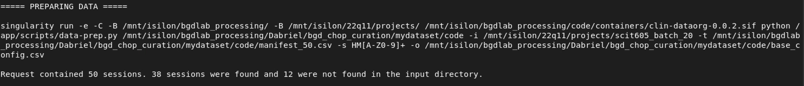
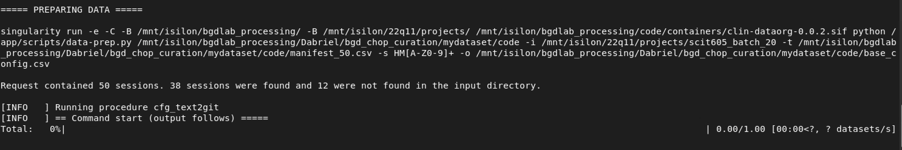
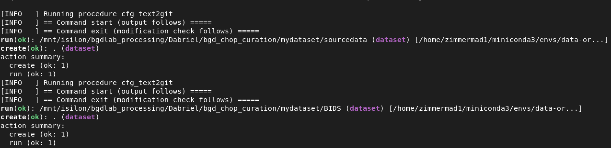
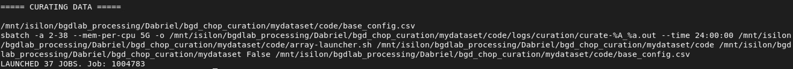
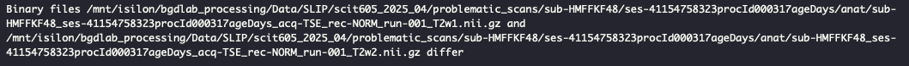

Chapter 5 Bidsify
The first step in the actual curation process that uses the raw imaging data involves using HeuDiConv to convert DICOMs to NifTI. Throughout this entire process, your data-org environment should be activated and you should be at the top level directory you created unless otherwise specified
5.1 Main Command
5.1.1 Arguments
WORK_DIRcorresponds to the path to the directory we initialized in the intro.CMDcorresponds to the action we want to execute:setuppreps the dataset for curation by identifying data from the manifest that is on Respublica at the path(s) specified by the-dflagbidsifydoes the setup step before launching bidsify jobs. If the setup step was alerady run, then it just launches the bidsify jobs.
BASE_DIRcorresponds to the top directory of the path we initially created that holds our dataset. In this walkthrough, we created/mnt/isilon/bgdlab_processing/Dabriel/bgd_chop_curation/mydatasetto hold the code for the curation process and the output. For regular SLIP deliveries, this argument defaults to the main SLIP path/mnt/isilon/bgdlab_processing/Data/SLIPsince curated SLIP datasets are expected to be underneath this directory like the following dataset:
📁 Data
└── 📁 SLIP
├── 📁 scit605_2025_01
├── 📁 scit605_2025_02
├── 📁 scit605_2025_03DATASET_NAMEwill be mydataset for this example. Typically for SLIP data from scit-605 lab, it is named for the monthly request you’re organizing. For example if you’re working on the 2026-06 request, the directory you would make is scit605_2026_06
DICOMSwill be the path(s) to the raw dicoms in the 22q11 fileshare. You can find this from the CHOP Data Deliveries Notion page in theTriGBatchcolumn. For this example we are using the 2025-04 request which is included in batch 20 so the path is/mnt/isilon/22q11/projects/scit605_batch_20. You can also pass multiple paths in a comma seperated list(no spaces) to this argumentMANIFESTis the request submitted to CHOP for imaging data including information on the scan. For regular SLIP request, these tables are at/mnt/isilon/bgdlab_processing/Data/SLIP/request_manifestswith a standard naming convetion based on the year of the request such as 2025_04_requested_sessions_with_metadata.csv. We will use a truncated version of that table for this example with 50 random sessions. Necessary columns for curation:request_labela label that denotes which dataset the data belongs to (2025-04 in this example)
pat_id
proc_ord_id
proc_ord_age
sex
race
ethnicity
birth_weight_kg
birth_length_cm
5.1.2 bidsify
To run the first active curation step, you can just launch the bidsify command. Or in the section below you can just launch the setup command to identify what data you have on Respublica first and afterwards run this command.
Before running, you can set your variables globally, or just specify them every time you run a command. To set them globally and run the bidsification step:
cd $WORK_DIR
export BASE_DIR="/mnt/isilon/bgdlab_processing/Dabriel/bgd_chop_curation"
export DATASET_NAME="mydataset"
export DICOMS="/mnt/isilon/22q11/projects/scit605_batch_20"
export MANIFEST="/mnt/isilon/bgdlab_processing/Dabriel/bgd_chop_curation/mydataset/code/manifest_50.csv"
python run-clin-dataorg.py $PWD bidsify -b $BASE_DIR -n $DATASET_NAME -d $DICOMS -m $MANIFESTFor the -d argument, you can pass a list of directories, -d $DICOMS,$DICOM2 or
set your $DICOM variable as export DICOMS="/mnt/isilon/22q11/projects/scit605_batch_20,/mnt/isilon/22q11/projects/scit605_batch_21"
or specify them each time:
5.1.4 Check Job Status
Once you start running command, you can check the status of your jobs and update the job tracker curation_job_summary.tsv by running:
Now we’ll go through the output of this step in depth to include the terminal command output, output files/directories, and debugging
5.3 Command Output
After running bidsify or setup command, you may be prompted to double check the output directory to ensure nothing will be overwritten. As shown below, there is only the code directory which holds the curation scripts. You can hit enter in the terminal to continue.
## code
Next after either bidsify or setup, the output will describe the data that has been located based on what was included in the manifest.

We can see that a singularity command was run such that the active curation is only ever occurring inside the container. Out of the 50 sessions, data for 38 sessions was found in the specified $DICOMS path.
If you just ran the setup command this would be the end of your output. If you just ran the bidsify command, you can expect the following output. Thus, if you ran the bidsify command after separately running the setup command, you would only get the following output.
Next the main datasets that will hold edited rawdata (DICOMs) and BIDSified data (NifTI) are created. Edited DICOMs are held in sourcedata directory and BIDSified data in the BIDS directory.


Then SLURM jobs are launched for each subject to bidsify.

SLURM jobs are launched using an array based on subject. When subjects’ have multiple sessions, each session is curated in succession within a single job. Thus the number of jobs launched ≠ the number of sessions, instead jobs launched = the number of subjects.
💡 Tip
Use watch squeue -u $CHOP_USRNAME to keep an eye on your active SLURM jobs. Statuses update every 2 seconds.
5.4 Full Directory Tree After Bidsify
📁 mydataset
├── 📁 code
├── 📄 array_launcher.sh
├── 📄 base_config.csv
├── 📄 batch-cubids-combine.sh
├── 📄 cubids-apply.sh
├── 📄 curation_job_summary.tsv
├── 📄 data-bidsify.py
├── 📄 run-clin-dataorg.py
├── 📄 run-cubids-prep.sh
├── 📁 logs
├── 📁 curation
└── 📄 curate-<jobid>_<arrayid>.out
├── 📁 heudiconv
├── 📄 bidsify_<subject>_<session-name>.txt
└── 📄 <subject>_heudiconv_perform.tsv
├── 📁 BIDS
├── 📄 .bidsignore
├── 📁 .datalad
├── 📁 .git
├── 📄 .gitattributes
├── 📄 .gitignore
├── 📁 .heudiconv
└── 📁 HM2MOR40C
└── 📁 ses-499739009000procId004921ageDays
└── 📁 info
├── 📄 dicominfo_ses-499739009000procId004921ageDays.tsv
├── 📄 filegroup_ses-499739009000procId004921ageDays.tsv
├── 📄 HM2MOR40C_ses-499739009000procId004921ageDays.auto.txt
├── 📄 HM2MOR40C_ses-499739009000procId004921ageDays.edit.txt
├── 📄 README
├── 📄 scans.json
├── 📄 participants.tsv
├── 📄 participants.json
├── 📄 dataset_description.json
├── 📄 CHANGES
├── 📁 sub-HM2MOR40C
├── 📁 .datalad
├── 📁 .git
├── 📄 .gitmodules
├── 📄 .gitattributes
├── 📁 ses-499739009000procId004921ageDays
├── 📁 .datalad
├── 📁 .git
├── 📄 .gitmodules
├── 📄 .gitattributes
├── 📁 anat
└── 🧠 sub-HM2MOR40C_ses-499739009000procId004921ageDays_acq-TSE_rec-DIS2D_run-002_T2w.nii.gz
└── 📄 sub-HM2MOR40C_ses-499739009000procId004921ageDays_acq-TSE_rec-DIS2D_run-002_T2w.json
├── 📄 sub-HM2MOR40C_ses-499739009000procId004921ageDays_scans.tsv
├── 📁 sourcedata
├── 📁 .datalad
├── 📁 .git
├── 📄 .gitattributes
├── 📁 HM2MOR40C
├── 📁 .datalad
├── 📁 .git
├── 📄 .gitattributes
├── 📄 .gitmodules
├── 📁 499739009000procId004921ageDays
├── 📁 .datalad
├── 📁 .git
├── 📄 .gitattributes
├── 📄 dcm2niix_config.json
├── 📄 uuid_2ae84a22-7ce905a5-c78dce52-a28f84dd-69b3e92d.zip
├── 📁 uuid_2ae84a22-7ce905a5-c78dce52-a28f84dd-69b3e92d
├── 📁 uuid_2ae84a22-7ce905a5-c78dce52-a28f84dd-69b3e92d
├── 📁 STUDY
├── 📁 set_1
└── 📄 MR00000.dcm
├── 📁 set_2
├── 📁 set_3
├── 📁 set_4
├── 📁 set_5
├── 📁 set_6
├── 📁 set_7
├── 📁 set_8
├── 📁 set_9
├── 📁 set_10
├── 📁 set_11
├── 📁 set_12
├── 📁 set_13
├── 📁 set_14
├── 📁 set_15
├── 📁 set_16
├── 📁 set_17
├── 📁 set_18
├── 📁 set_19
├── 📁 set_20
└── 📁 set_21
└── 📁 problematic_scans🧠 Note
Don’t expect the number of DICOM series here to correspond to the number of output NifTIs. This is because we only want to use structural and diffusion brain images. Sometimes we get other body parts (i.e. heart) or we get scans of other modalities (i.e. MRA) that we ignore/don’t convert based on the filters in our HeuDiConv heuristic
5.5 Output Files
1. base_config.csv
Output from this stage is a table within your $WORK_DIR listing the information for each session by subject.
Figure 5.1: Base config
2. curation_job_summary.tsv
Table that is used to store the status of each SLURM job you launched.
Figure 5.2: Curation job summary
3. sourcedata
Directory containing edited DICOMs. The original raw data is either compressed into a single ZIP file at the specified $DICOMS path or as a directory. Paths are nested such that (the first subdirectory is a result of the GCP deidentification process in data delivered via GCP), then the subsequent directory is the DICOM ‘Study’, and then the DICOM ‘Series’ featuring individual DICOM ‘instances’ (basically slices of the brain from the end of one axis to another).1
An example session delivered via GCP
📁 /mnt/isilon/22q11/projects/scit605_batch_19/HM3JE4QTC_307326634746_577
├── 📁 GCPDicom_deid_uuid_69ecda2e-d2d87192-a9e6efab-38468865-d1869b98
├── 📁 1.3.6.1.4.1.11129.5.1.320095716370311217869815258082494720144
├── 📁 1.3.6.1.4.1.11129.5.1.110467961722322632112251159407706174818
└── 📄 1.3.6.1.4.1.11129.5.1.214251349795671109240889002528357517753.dcmOur working example session delivered via OnPrem
📁 /mnt/isilon/22q11/projects/scit605_batch_20/HM2MOR40C_499739009000_4921
├── 📁 uuid_2ae84a22-7ce905a5-c78dce52-a28f84dd-69b3e92d.zipHere is an example subject’s sourcedata tree.
📁 sourcedata/HM2MOR40C_499739009000_4921
├── 📁 .datalad
├── 📁 .git
├── 📄 .gitattributes
├── 📁 uuid_2ae84a22-7ce905a5-c78dce52-a28f84dd-69b3e92d.zip
├── 📁 uuid_2ae84a22-7ce905a5-c78dce52-a28f84dd-69b3e92d
├── 📁 STUDY
├── 📁 'MR ANTERIOR'
└── 📄 MR00000.dcm
├── 📁 'MR asl_3d_tra_fast'
├── 📁 'MR AX'
├── 📁 'MR AX-2'
├── 📁 'MR AX MPR'
├── 📁 'MR BASILAR'
├── 📁 'MR COR'
├── 📁 'MR COR2'
├── 📁 'MR localizer'
├── 📁 'MR relCBF_GREY MOSAIC'
├── 📁 'MR resolve_4scan_trace_tra_p2_s2_224_ADC'
├── 📁 'MR resolve_4scan_trace_tra_p2_s2_224_TRACEW'
├── 📁 'MR t1_mprage_sag_p2_iso_0.9'
├── 📁 'MR t2_tirm_tra_darkfluid'
├── 📁 'MR t2_tse_cor s2'
├── 📁 'MR t2_tse_tra'
├── 📁 'MR TOF_3D_multislab brain MRA_cs_4.4'
├── 📁 'MR TOF_3D_multislab brain MRA_cs_4.4_MIP_COR'
├── 📁 'MR TOF_3D_multislab brain MRA_cs_4.4_MIP_Radials'
├── 📁 'MR TOF_3D_multislab brain MRA_cs_4.4_MIP_SAG'
├── 📁 'MR TOF_3D_multislab brain MRA_cs_4.4_MIP_SAG'
└── 📁 'MR TOF_3D_multislab brain MRA_cs_4.4_MIP_TRA' edited sourcedata
📁 sourcedata
├── 📁 .datalad
├── 📁 .git
├── 📄 .gitattributes
├── 📁 HM2MOR40C
├── 📁 .datalad
├── 📁 .git
├── 📄 .gitattributes
├── 📄 .gitmodules
├── 📁 499739009000procId004921ageDays
├── 📁 .datalad
├── 📁 .git
├── 📄 .gitattributes
├── 📄 dcm2niix_config.json
├── 📄 uuid_2ae84a22-7ce905a5-c78dce52-a28f84dd-69b3e92d.zip
├── 📁 uuid_2ae84a22-7ce905a5-c78dce52-a28f84dd-69b3e92d
├── 📁 uuid_2ae84a22-7ce905a5-c78dce52-a28f84dd-69b3e92d
├── 📁 STUDY
├── 📁 set_1
└── 📄 MR00000.dcm
├── 📁 set_2
├── 📁 set_3
├── 📁 set_4
├── 📁 set_5
├── 📁 set_6
├── 📁 set_7
├── 📁 set_8
├── 📁 set_9
├── 📁 set_10
├── 📁 set_11
├── 📁 set_12
├── 📁 set_13
├── 📁 set_14
├── 📁 set_15
├── 📁 set_16
├── 📁 set_17
├── 📁 set_18
├── 📁 set_19
├── 📁 set_20
└── 📁 set_21This rawdata is:
1. copied over to the new sourcedata session specific directory for each subject (if it’s a ZIP file it is) unzipped
2. names of the extracted directories edited to remove the spaces within the original names (spaces in filenames/directories are a No-No for linux!)
3. decompressed within the container using Singularity
4. metadata/SOP tags2
4. BIDS
NifTIs made from sourcedata DICOMs along with standard BIDS accessory files. Each subject has their own directory, under which are session directories and finally modality specific (anat or dwi) directories. The <subject-id>_<session-id>_scans.tsv> tables feature the filename(s) of the scans included in the session. The BIDS accessory files include: README, CHANGES, participants.json, participants.tsv, dataset_description.json, and scans.json. Please read the BIDS documentation to understand these files.
5. problematic_scans
This directory contains data that either didn’t successfully convert to NifTI or converted data couldn’t be appropriately named with the current configuration. An example:
📁 sub-HMFFKF48
├── 📁 ses-41154758323procId000317ageDays
├── 📁 anat
├── 📄 sub-HMFFKF48_ses-41154758323procId000317ageDays_acq-TSE_rec-NORM_run-001_T2w1.json
├── 🧠 sub-HMFFKF48_ses-41154758323procId000317ageDays_acq-TSE_rec-NORM_run-001_T2w1.nii.gz
├── 📄 sub-HMFFKF48_ses-41154758323procId000317ageDays_acq-TSE_rec-NORM_run-001_T2w2.json
└── 🧠 sub-HMFFKF48_ses-41154758323procId000317ageDays_acq-TSE_rec-NORM_run-001_T2w2.nii.gzThe issue here is that these scans were given the exact same name by our heuristic through HeuDiConv processing so to prevent overwriting, they were given a numbered suffix which isn’t BIDS compliant. Unsure why this happens, but the files do indeed differ when we check:
diff /mnt/isilon/bgdlab_processing/Data/SLIP/scit605_2025_04/problematic_scans/sub-HMFFKF48/ses-41154758323procId000317ageDays/anat/sub-HMFFKF48_ses-41154758323procId000317ageDays_acq-TSE_rec-NORM_run-001_T2w1.nii.gz /mnt/isilon/bgdlab_processing/Data/SLIP/scit605_2025_04/problematic_scans/sub-HMFFKF48/ses-41154758323procId000317ageDays/anat/sub-HMFFKF48_ses-41154758323procId000317ageDays_acq-TSE_rec-NORM_run-001_T2w2.nii.gz
so this is why these scans were moved out of the BIDS directory.7. HeuDiConv run tracker
Our heuristic file adds run number via an incremental process that uses a text file to keep track of unique filenames. When there are numerous of similar filenames, the run number is incremented by 1. This file is kept in a completely different directory and is deleted once you run the cubids or cubids-prep steps.
📁 Data
├── 📁 tmp_heudiconv
└── HM2MOR40C_499739009000_4921_501679.txtIn the above file:
## Warning in readLines("/mnt/isilon/bgdlab_processing/Dabriel/bgd_chop_curation/HM2MOR40C_499739009000_4921_501679.txt"):
## incomplete final line found on '/mnt/isilon/bgdlab_processing/Dabriel/bgd_chop_curation/HM2MOR40C_499739009000_4921_501679.txt'## [1] "acq-TSE_rec-DIS2D_T2w" "acq-MPRAGE_rec-DIS2D_T1w" "acq-TSE_rec-DIS2D_T2w" "acq-TIRMDARKFatSat_rec-DIS2D"Here there are 2 DICOM series that were labelled by our heuristic as “acq-TSE_rec-DIS2D_T2w”. The first instance will be named like acq-TSE_rec-DIS2D_T2w_run-001 while the next instance will be acq-TSE_rec-DIS2D_T2w_run-002. HeuDiConv has their own method of incrementing runs for similarly named files but I found it to be unreliable. This could have been fixed in newer versions of HeuDiConv (dataorg container uses version 1.3.1) but I haven’t tried them out. We expect that HeuDiConv is following the order that the series’ were acquired in such that any run-001 is occurring before run-002 for the same acqusition types but haven’t officially checked. This could be something to verify in the future. From the HeuDiConv docs, the below DICOM metadata is used to order series, but in our data these fields are usually redacted/removed during the de-identification process.
The following fields are checked in order
AcquisitionDate & AcquisitionTime (0008,0022); (0008,0032) AcquisitionDateTime (0008,002A); SeriesDate & SeriesTime (0008,0021); (0008,0031)
So this will be a mystery to solve! (In reality you could probably open a few sessions in NilRead and compare with the dicominfo table to see if the order of SeriesDescriptions are the same)
5.6 Logs
Since we are launching SLURM jobs, we are writing job output to a logs directory underneath the specified WORK_DIR. Within the logs directory are 2 subdirectories with logs for the bidsify jobs (curation) and then another one for the heudiconv command output (heudiconv).
curation logs
Curation logs for our example:## [1] "python -u /mnt/isilon/bgdlab_processing/Dabriel/bgd_chop_curation/mydataset/code/data-bidsify.py /mnt/isilon/bgdlab_processing/Dabriel/bgd_chop_curation/mydataset/code -d /mnt/isilon/22q11/projects/scit605_batch_20/HM2MOR40C_499739009000_4921 -i /mnt/isilon/bgdlab_processing/Dabriel/bgd_chop_curation/mydataset/sourcedata -o /mnt/isilon/bgdlab_processing/Dabriel/bgd_chop_curation/mydataset/BIDS -s HM2MOR40C -ss 499739009000procId004921ageDays"
## [2] ""
## [3] "CURATING SUBJECT HM2MOR40C DATA WITH 1 SESSIONS"
## [4] "CREATING SOURCE SUBJECT DATASET"
## [5] "[INFO] Running procedure cfg_text2git "
## [6] "[INFO] == Command start (output follows) ===== "
## [7] "[INFO] == Command exit (modification check follows) ===== "
## [8] "run(ok): /mnt/isilon/bgdlab_processing/Dabriel/bgd_chop_curation/mydataset/sourcedata/HM2MOR40C (dataset) [/home/zimmermad1/miniconda3/envs/data-or...]"
## [9] "create(ok): . (dataset)"
## [10] "action summary:"
## [11] " create (ok: 1)"
## [12] " run (ok: 1)"
## [13] "----------------------------------------------------------------"
## [14] "[INFO] Running procedure cfg_text2git "
## [15] "[INFO] == Command start (output follows) ===== "
## [16] "[INFO] == Command exit (modification check follows) ===== "
## [17] "run(ok): /mnt/isilon/bgdlab_processing/Dabriel/bgd_chop_curation/mydataset/sourcedata/HM2MOR40C/499739009000procId004921ageDays (dataset) [/home/zimmermad1/miniconda3/envs/data-or...]"
## [18] "create(ok): . (dataset)"
## [19] "action summary:"
## [20] " create (ok: 1)"
## [21] " run (ok: 1)"
## [22] ""
## [23] "COPYING DICOMS FOR 499739009000procId004921ageDays FROM /mnt/isilon/22q11/projects/scit605_batch_20/HM2MOR40C_499739009000_4921"
## [24] ""
## [25] "EXTRACTING /mnt/isilon/bgdlab_processing/Dabriel/bgd_chop_curation/mydataset/sourcedata/HM2MOR40C/499739009000procId004921ageDays/uuid_2ae84a22-7ce905a5-c78dce52-a28f84dd-69b3e92d.zip to /mnt/isilon/bgdlab_processing/Dabriel/bgd_chop_curation/mydataset/sourcedata/HM2MOR40C/499739009000procId004921ageDays/uuid_2ae84a22-7ce905a5-c78dce52-a28f84dd-69b3e92d"
## [26] "RENAMING /mnt/isilon/bgdlab_processing/Dabriel/bgd_chop_curation/mydataset/sourcedata/HM2MOR40C/499739009000procId004921ageDays/uuid_2ae84a22-7ce905a5-c78dce52-a28f84dd-69b3e92d/uuid_2ae84a22-7ce905a5-c78dce52-a28f84dd-69b3e92d/STUDY/MR localizer to /mnt/isilon/bgdlab_processing/Dabriel/bgd_chop_curation/mydataset/sourcedata/HM2MOR40C/499739009000procId004921ageDays/uuid_2ae84a22-7ce905a5-c78dce52-a28f84dd-69b3e92d/uuid_2ae84a22-7ce905a5-c78dce52-a28f84dd-69b3e92d/STUDY/set_1"
## [27] "RENAMING /mnt/isilon/bgdlab_processing/Dabriel/bgd_chop_curation/mydataset/sourcedata/HM2MOR40C/499739009000procId004921ageDays/uuid_2ae84a22-7ce905a5-c78dce52-a28f84dd-69b3e92d/uuid_2ae84a22-7ce905a5-c78dce52-a28f84dd-69b3e92d/STUDY/MR AX to /mnt/isilon/bgdlab_processing/Dabriel/bgd_chop_curation/mydataset/sourcedata/HM2MOR40C/499739009000procId004921ageDays/uuid_2ae84a22-7ce905a5-c78dce52-a28f84dd-69b3e92d/uuid_2ae84a22-7ce905a5-c78dce52-a28f84dd-69b3e92d/STUDY/set_2"
## [28] "RENAMING /mnt/isilon/bgdlab_processing/Dabriel/bgd_chop_curation/mydataset/sourcedata/HM2MOR40C/499739009000procId004921ageDays/uuid_2ae84a22-7ce905a5-c78dce52-a28f84dd-69b3e92d/uuid_2ae84a22-7ce905a5-c78dce52-a28f84dd-69b3e92d/STUDY/MR BASILAR to /mnt/isilon/bgdlab_processing/Dabriel/bgd_chop_curation/mydataset/sourcedata/HM2MOR40C/499739009000procId004921ageDays/uuid_2ae84a22-7ce905a5-c78dce52-a28f84dd-69b3e92d/uuid_2ae84a22-7ce905a5-c78dce52-a28f84dd-69b3e92d/STUDY/set_3"
## [29] "RENAMING /mnt/isilon/bgdlab_processing/Dabriel/bgd_chop_curation/mydataset/sourcedata/HM2MOR40C/499739009000procId004921ageDays/uuid_2ae84a22-7ce905a5-c78dce52-a28f84dd-69b3e92d/uuid_2ae84a22-7ce905a5-c78dce52-a28f84dd-69b3e92d/STUDY/MR t1_mprage_sag_p2_iso_0.9 to /mnt/isilon/bgdlab_processing/Dabriel/bgd_chop_curation/mydataset/sourcedata/HM2MOR40C/499739009000procId004921ageDays/uuid_2ae84a22-7ce905a5-c78dce52-a28f84dd-69b3e92d/uuid_2ae84a22-7ce905a5-c78dce52-a28f84dd-69b3e92d/STUDY/set_4"
## [30] "RENAMING /mnt/isilon/bgdlab_processing/Dabriel/bgd_chop_curation/mydataset/sourcedata/HM2MOR40C/499739009000procId004921ageDays/uuid_2ae84a22-7ce905a5-c78dce52-a28f84dd-69b3e92d/uuid_2ae84a22-7ce905a5-c78dce52-a28f84dd-69b3e92d/STUDY/MR COR2 to /mnt/isilon/bgdlab_processing/Dabriel/bgd_chop_curation/mydataset/sourcedata/HM2MOR40C/499739009000procId004921ageDays/uuid_2ae84a22-7ce905a5-c78dce52-a28f84dd-69b3e92d/uuid_2ae84a22-7ce905a5-c78dce52-a28f84dd-69b3e92d/STUDY/set_5"
## [31] "RENAMING /mnt/isilon/bgdlab_processing/Dabriel/bgd_chop_curation/mydataset/sourcedata/HM2MOR40C/499739009000procId004921ageDays/uuid_2ae84a22-7ce905a5-c78dce52-a28f84dd-69b3e92d/uuid_2ae84a22-7ce905a5-c78dce52-a28f84dd-69b3e92d/STUDY/MR ANTERIOR to /mnt/isilon/bgdlab_processing/Dabriel/bgd_chop_curation/mydataset/sourcedata/HM2MOR40C/499739009000procId004921ageDays/uuid_2ae84a22-7ce905a5-c78dce52-a28f84dd-69b3e92d/uuid_2ae84a22-7ce905a5-c78dce52-a28f84dd-69b3e92d/STUDY/set_6"
## [32] "RENAMING /mnt/isilon/bgdlab_processing/Dabriel/bgd_chop_curation/mydataset/sourcedata/HM2MOR40C/499739009000procId004921ageDays/uuid_2ae84a22-7ce905a5-c78dce52-a28f84dd-69b3e92d/uuid_2ae84a22-7ce905a5-c78dce52-a28f84dd-69b3e92d/STUDY/MR COR to /mnt/isilon/bgdlab_processing/Dabriel/bgd_chop_curation/mydataset/sourcedata/HM2MOR40C/499739009000procId004921ageDays/uuid_2ae84a22-7ce905a5-c78dce52-a28f84dd-69b3e92d/uuid_2ae84a22-7ce905a5-c78dce52-a28f84dd-69b3e92d/STUDY/set_7"
## [33] "RENAMING /mnt/isilon/bgdlab_processing/Dabriel/bgd_chop_curation/mydataset/sourcedata/HM2MOR40C/499739009000procId004921ageDays/uuid_2ae84a22-7ce905a5-c78dce52-a28f84dd-69b3e92d/uuid_2ae84a22-7ce905a5-c78dce52-a28f84dd-69b3e92d/STUDY/MR t2_tse_cor s2 to /mnt/isilon/bgdlab_processing/Dabriel/bgd_chop_curation/mydataset/sourcedata/HM2MOR40C/499739009000procId004921ageDays/uuid_2ae84a22-7ce905a5-c78dce52-a28f84dd-69b3e92d/uuid_2ae84a22-7ce905a5-c78dce52-a28f84dd-69b3e92d/STUDY/set_8"
## [34] "RENAMING /mnt/isilon/bgdlab_processing/Dabriel/bgd_chop_curation/mydataset/sourcedata/HM2MOR40C/499739009000procId004921ageDays/uuid_2ae84a22-7ce905a5-c78dce52-a28f84dd-69b3e92d/uuid_2ae84a22-7ce905a5-c78dce52-a28f84dd-69b3e92d/STUDY/MR t2_tse_tra to /mnt/isilon/bgdlab_processing/Dabriel/bgd_chop_curation/mydataset/sourcedata/HM2MOR40C/499739009000procId004921ageDays/uuid_2ae84a22-7ce905a5-c78dce52-a28f84dd-69b3e92d/uuid_2ae84a22-7ce905a5-c78dce52-a28f84dd-69b3e92d/STUDY/set_9"
## [35] "RENAMING /mnt/isilon/bgdlab_processing/Dabriel/bgd_chop_curation/mydataset/sourcedata/HM2MOR40C/499739009000procId004921ageDays/uuid_2ae84a22-7ce905a5-c78dce52-a28f84dd-69b3e92d/uuid_2ae84a22-7ce905a5-c78dce52-a28f84dd-69b3e92d/STUDY/MR resolve_4scan_trace_tra_p2_s2_224_ADC to /mnt/isilon/bgdlab_processing/Dabriel/bgd_chop_curation/mydataset/sourcedata/HM2MOR40C/499739009000procId004921ageDays/uuid_2ae84a22-7ce905a5-c78dce52-a28f84dd-69b3e92d/uuid_2ae84a22-7ce905a5-c78dce52-a28f84dd-69b3e92d/STUDY/set_10"
## [36] "RENAMING /mnt/isilon/bgdlab_processing/Dabriel/bgd_chop_curation/mydataset/sourcedata/HM2MOR40C/499739009000procId004921ageDays/uuid_2ae84a22-7ce905a5-c78dce52-a28f84dd-69b3e92d/uuid_2ae84a22-7ce905a5-c78dce52-a28f84dd-69b3e92d/STUDY/MR t2_tirm_tra_darkfluid to /mnt/isilon/bgdlab_processing/Dabriel/bgd_chop_curation/mydataset/sourcedata/HM2MOR40C/499739009000procId004921ageDays/uuid_2ae84a22-7ce905a5-c78dce52-a28f84dd-69b3e92d/uuid_2ae84a22-7ce905a5-c78dce52-a28f84dd-69b3e92d/STUDY/set_11"
## [37] "RENAMING /mnt/isilon/bgdlab_processing/Dabriel/bgd_chop_curation/mydataset/sourcedata/HM2MOR40C/499739009000procId004921ageDays/uuid_2ae84a22-7ce905a5-c78dce52-a28f84dd-69b3e92d/uuid_2ae84a22-7ce905a5-c78dce52-a28f84dd-69b3e92d/STUDY/MR TOF_3D_multislab brain MRA_cs_4.4 to /mnt/isilon/bgdlab_processing/Dabriel/bgd_chop_curation/mydataset/sourcedata/HM2MOR40C/499739009000procId004921ageDays/uuid_2ae84a22-7ce905a5-c78dce52-a28f84dd-69b3e92d/uuid_2ae84a22-7ce905a5-c78dce52-a28f84dd-69b3e92d/STUDY/set_12"
## [38] "RENAMING /mnt/isilon/bgdlab_processing/Dabriel/bgd_chop_curation/mydataset/sourcedata/HM2MOR40C/499739009000procId004921ageDays/uuid_2ae84a22-7ce905a5-c78dce52-a28f84dd-69b3e92d/uuid_2ae84a22-7ce905a5-c78dce52-a28f84dd-69b3e92d/STUDY/MR TOF_3D_multislab brain MRA_cs_4.4_MIP_COR to /mnt/isilon/bgdlab_processing/Dabriel/bgd_chop_curation/mydataset/sourcedata/HM2MOR40C/499739009000procId004921ageDays/uuid_2ae84a22-7ce905a5-c78dce52-a28f84dd-69b3e92d/uuid_2ae84a22-7ce905a5-c78dce52-a28f84dd-69b3e92d/STUDY/set_13"
## [39] "RENAMING /mnt/isilon/bgdlab_processing/Dabriel/bgd_chop_curation/mydataset/sourcedata/HM2MOR40C/499739009000procId004921ageDays/uuid_2ae84a22-7ce905a5-c78dce52-a28f84dd-69b3e92d/uuid_2ae84a22-7ce905a5-c78dce52-a28f84dd-69b3e92d/STUDY/MR AX MPR to /mnt/isilon/bgdlab_processing/Dabriel/bgd_chop_curation/mydataset/sourcedata/HM2MOR40C/499739009000procId004921ageDays/uuid_2ae84a22-7ce905a5-c78dce52-a28f84dd-69b3e92d/uuid_2ae84a22-7ce905a5-c78dce52-a28f84dd-69b3e92d/STUDY/set_14"
## [40] "RENAMING /mnt/isilon/bgdlab_processing/Dabriel/bgd_chop_curation/mydataset/sourcedata/HM2MOR40C/499739009000procId004921ageDays/uuid_2ae84a22-7ce905a5-c78dce52-a28f84dd-69b3e92d/uuid_2ae84a22-7ce905a5-c78dce52-a28f84dd-69b3e92d/STUDY/MR resolve_4scan_trace_tra_p2_s2_224_TRACEW to /mnt/isilon/bgdlab_processing/Dabriel/bgd_chop_curation/mydataset/sourcedata/HM2MOR40C/499739009000procId004921ageDays/uuid_2ae84a22-7ce905a5-c78dce52-a28f84dd-69b3e92d/uuid_2ae84a22-7ce905a5-c78dce52-a28f84dd-69b3e92d/STUDY/set_15"
## [41] "RENAMING /mnt/isilon/bgdlab_processing/Dabriel/bgd_chop_curation/mydataset/sourcedata/HM2MOR40C/499739009000procId004921ageDays/uuid_2ae84a22-7ce905a5-c78dce52-a28f84dd-69b3e92d/uuid_2ae84a22-7ce905a5-c78dce52-a28f84dd-69b3e92d/STUDY/MR AX-2 to /mnt/isilon/bgdlab_processing/Dabriel/bgd_chop_curation/mydataset/sourcedata/HM2MOR40C/499739009000procId004921ageDays/uuid_2ae84a22-7ce905a5-c78dce52-a28f84dd-69b3e92d/uuid_2ae84a22-7ce905a5-c78dce52-a28f84dd-69b3e92d/STUDY/set_16"
## [42] "RENAMING /mnt/isilon/bgdlab_processing/Dabriel/bgd_chop_curation/mydataset/sourcedata/HM2MOR40C/499739009000procId004921ageDays/uuid_2ae84a22-7ce905a5-c78dce52-a28f84dd-69b3e92d/uuid_2ae84a22-7ce905a5-c78dce52-a28f84dd-69b3e92d/STUDY/MR TOF_3D_multislab brain MRA_cs_4.4_MIP_SAG to /mnt/isilon/bgdlab_processing/Dabriel/bgd_chop_curation/mydataset/sourcedata/HM2MOR40C/499739009000procId004921ageDays/uuid_2ae84a22-7ce905a5-c78dce52-a28f84dd-69b3e92d/uuid_2ae84a22-7ce905a5-c78dce52-a28f84dd-69b3e92d/STUDY/set_17"
## [43] "RENAMING /mnt/isilon/bgdlab_processing/Dabriel/bgd_chop_curation/mydataset/sourcedata/HM2MOR40C/499739009000procId004921ageDays/uuid_2ae84a22-7ce905a5-c78dce52-a28f84dd-69b3e92d/uuid_2ae84a22-7ce905a5-c78dce52-a28f84dd-69b3e92d/STUDY/MR asl_3d_tra_fast to /mnt/isilon/bgdlab_processing/Dabriel/bgd_chop_curation/mydataset/sourcedata/HM2MOR40C/499739009000procId004921ageDays/uuid_2ae84a22-7ce905a5-c78dce52-a28f84dd-69b3e92d/uuid_2ae84a22-7ce905a5-c78dce52-a28f84dd-69b3e92d/STUDY/set_18"
## [44] "RENAMING /mnt/isilon/bgdlab_processing/Dabriel/bgd_chop_curation/mydataset/sourcedata/HM2MOR40C/499739009000procId004921ageDays/uuid_2ae84a22-7ce905a5-c78dce52-a28f84dd-69b3e92d/uuid_2ae84a22-7ce905a5-c78dce52-a28f84dd-69b3e92d/STUDY/MR TOF_3D_multislab brain MRA_cs_4.4_MIP_Radials to /mnt/isilon/bgdlab_processing/Dabriel/bgd_chop_curation/mydataset/sourcedata/HM2MOR40C/499739009000procId004921ageDays/uuid_2ae84a22-7ce905a5-c78dce52-a28f84dd-69b3e92d/uuid_2ae84a22-7ce905a5-c78dce52-a28f84dd-69b3e92d/STUDY/set_19"
## [45] "RENAMING /mnt/isilon/bgdlab_processing/Dabriel/bgd_chop_curation/mydataset/sourcedata/HM2MOR40C/499739009000procId004921ageDays/uuid_2ae84a22-7ce905a5-c78dce52-a28f84dd-69b3e92d/uuid_2ae84a22-7ce905a5-c78dce52-a28f84dd-69b3e92d/STUDY/MR TOF_3D_multislab brain MRA_cs_4.4_MIP_TRA to /mnt/isilon/bgdlab_processing/Dabriel/bgd_chop_curation/mydataset/sourcedata/HM2MOR40C/499739009000procId004921ageDays/uuid_2ae84a22-7ce905a5-c78dce52-a28f84dd-69b3e92d/uuid_2ae84a22-7ce905a5-c78dce52-a28f84dd-69b3e92d/STUDY/set_20"
## [46] "RENAMING /mnt/isilon/bgdlab_processing/Dabriel/bgd_chop_curation/mydataset/sourcedata/HM2MOR40C/499739009000procId004921ageDays/uuid_2ae84a22-7ce905a5-c78dce52-a28f84dd-69b3e92d/uuid_2ae84a22-7ce905a5-c78dce52-a28f84dd-69b3e92d/STUDY/MR relCBF_GREY MOSAIC to /mnt/isilon/bgdlab_processing/Dabriel/bgd_chop_curation/mydataset/sourcedata/HM2MOR40C/499739009000procId004921ageDays/uuid_2ae84a22-7ce905a5-c78dce52-a28f84dd-69b3e92d/uuid_2ae84a22-7ce905a5-c78dce52-a28f84dd-69b3e92d/STUDY/set_21"
## [47] ""
## [48] "SAVING DICOM SESSION DATASET"
## [49] "[INFO] Unlocking files "
## [50] "[INFO] Recording unlocked state in git "
## [51] "[INFO] Completed unlocking files "
## [52] ""
## [53] "CHECKING IF SESSION HAS DICOMS IN EXPECTED FORMAT"
## [54] ""
## [55] "FILTERING DICOMS"
## [56] ""
## [57] "DECOMPRESSING DICOMS"
## [58] ""
## [59] ""
## [60] "SAVING DICOM SESSION DATASET"
## [61] ""
## [62] "SAVING DICOM SUBJECT DATASET"
## [63] "[INFO] Running procedure cfg_text2git "
## [64] "[INFO] == Command start (output follows) ===== "
## [65] "[INFO] == Command exit (modification check follows) ===== "
## [66] "run(ok): /mnt/isilon/bgdlab_processing/Dabriel/bgd_chop_curation/mydataset/BIDS/sub-HM2MOR40C (dataset) [/home/zimmermad1/miniconda3/envs/data-or...]"
## [67] "create(ok): . (dataset)"
## [68] "action summary:"
## [69] " create (ok: 1)"
## [70] " run (ok: 1)"
## [71] "----------------------------------------------------------------"
## [72] "[INFO] Running procedure cfg_text2git "
## [73] "[INFO] == Command start (output follows) ===== "
## [74] "[INFO] == Command exit (modification check follows) ===== "
## [75] "run(ok): /mnt/isilon/bgdlab_processing/Dabriel/bgd_chop_curation/mydataset/BIDS/sub-HM2MOR40C/ses-499739009000procId004921ageDays (dataset) [/home/zimmermad1/miniconda3/envs/data-or...]"
## [76] "create(ok): . (dataset)"
## [77] "action summary:"
## [78] " create (ok: 1)"
## [79] " run (ok: 1)"
## [80] "[INFO] Unlocking files "
## [81] "[INFO] Recording unlocked state in git "
## [82] "[INFO] Completed unlocking files "
## [83] ""
## [84] "RUNNING HEUDICONV FOR 499739009000procId004921ageDays"
## [85] "singularity run -e -C -B /mnt/isilon/bgdlab_processing/ --env 'HEUDICONV_FILELOCK_TIMEOUT=45' /mnt/isilon/bgdlab_processing/code/containers/clin-dataorg-0.0.2.sif heudiconv --files /mnt/isilon/bgdlab_processing/Dabriel/bgd_chop_curation/mydataset/sourcedata/HM2MOR40C/499739009000procId004921ageDays/uuid_2ae84a22-7ce905a5-c78dce52-a28f84dd-69b3e92d/uuid_2ae84a22-7ce905a5-c78dce52-a28f84dd-69b3e92d/STUDY -o /mnt/isilon/bgdlab_processing/Dabriel/bgd_chop_curation/mydataset/BIDS -f /app/scripts/heuristic.py -s HM2MOR40C -ss 499739009000procId004921ageDays -c dcm2niix --dcmconfig /mnt/isilon/bgdlab_processing/Dabriel/bgd_chop_curation/mydataset/sourcedata/HM2MOR40C/499739009000procId004921ageDays/dcm2niix_config.json -b 2>&1 | tee /mnt/isilon/bgdlab_processing/Dabriel/bgd_chop_curation/mydataset/code/logs/heudiconv/bidsify_HM2MOR40C_499739009000procId004921ageDays.txt"
## [86] "WARNING: Could not check for version updates: Connection to server could not be made"
## [87] "INFO: Running heudiconv version 1.3.1 latest Unknown"
## [88] "INFO: Analyzing 1129 dicoms"
## [89] "INFO: Generated sequence info for 1 studies with 20 entries total"
## [90] "INFO: Heuristic is missing an `infotoids` method, assigning empty method and using provided subject id HM2MOR40C. Provide `session` and `locator` fields for best results."
## [91] "INFO: Study session for StudySessionInfo(locator=None, session='499739009000procId004921ageDays', subject='HM2MOR40C')"
## [92] "INFO: Need to process 1 study sessions"
## [93] "INFO: PROCESSING STARTS: {'subject': 'HM2MOR40C', 'outdir': '/mnt/isilon/bgdlab_processing/Dabriel/bgd_chop_curation/mydataset/BIDS/', 'session': '499739009000procId004921ageDays'}"
## [94] "INFO: Processing 20 pre-sorted seqinfo entries"
## [95] "INFO: Doing conversion using dcm2niix"
## [96] "INFO: Converting /mnt/isilon/bgdlab_processing/Dabriel/bgd_chop_curation/mydataset/BIDS/sub-HM2MOR40C/ses-499739009000procId004921ageDays/anat/sub-HM2MOR40C_ses-499739009000procId004921ageDays_acq-MPRAGE_rec-DIS2D_run-001_T1w (192 DICOMs) -> /mnt/isilon/bgdlab_processing/Dabriel/bgd_chop_curation/mydataset/BIDS/sub-HM2MOR40C/ses-499739009000procId004921ageDays/anat . Converter: dcm2niix . Output types: ('nii.gz',)"
## [97] "INFO: Using custom config file /mnt/isilon/bgdlab_processing/Dabriel/bgd_chop_curation/mydataset/sourcedata/HM2MOR40C/499739009000procId004921ageDays/dcm2niix_config.json"
## [98] "file name HM2MOR40C_499739009000_4921_501679.txt"
## [99] "-------------------------------------------"
## [100] "Description: localizer"
## [101] ""
## [102] "PER False"
## [103] "excludeTypes 0"
## [104] "namesToExclude 6 local localizer loc local localizer loc"
## [105] "isDerived False"
## [106] "BodyPartExamined: brain"
## [107] "Dimensions: 512 512 3 1"
## [108] "type anat label unknown"
## [109] "file name HM2MOR40C_499739009000_4921_501679.txt"
## [110] "-------------------------------------------"
## [111] "Description: tof_3d_multislab brain mra_cs_4.4"
## [112] ""
## [113] "PER False"
## [114] "excludeTypes 0"
## [115] "namesToExclude 2 tof tof"
## [116] "isDerived False"
## [117] "BodyPartExamined: brain"
## [118] "Dimensions: 768 624 200 1"
## [119] "type mra label angio"
## [120] "file name HM2MOR40C_499739009000_4921_501679.txt"
## [121] "-------------------------------------------"
## [122] "Description: tof_3d_multislab brain mra_cs_4.4_mip_sag"
## [123] ""
## [124] "PER False"
## [125] "excludeTypes 0"
## [126] "namesToExclude 3 tof mip tof"
## [127] "isDerived True"
## [128] "BodyPartExamined: brain"
## [129] "Dimensions: 384 768 1 1"
## [130] "type mra label angio"
## [131] "file name HM2MOR40C_499739009000_4921_501679.txt"
## [132] "-------------------------------------------"
## [133] "Description: tof_3d_multislab brain mra_cs_4.4_mip_cor"
## [134] ""
## [135] "PER False"
## [136] "excludeTypes 0"
## [137] "namesToExclude 3 tof mip tof"
## [138] "isDerived True"
## [139] "BodyPartExamined: brain"
## [140] "Dimensions: 384 624 1 1"
## [141] "type mra label angio"
## [142] "file name HM2MOR40C_499739009000_4921_501679.txt"
## [143] "-------------------------------------------"
## [144] "Description: tof_3d_multislab brain mra_cs_4.4_mip_tra"
## [145] ""
## [146] "PER False"
## [147] "excludeTypes 0"
## [148] "namesToExclude 3 tof mip tof"
## [149] "isDerived True"
## [150] "BodyPartExamined: brain"
## [151] "Dimensions: 768 624 1 1"
## [152] "type mra label angio"
## [153] "file name HM2MOR40C_499739009000_4921_501679.txt"
## [154] "-------------------------------------------"
## [155] "Description: tof_3d_multislab brain mra_cs_4.4_mip_radials"
## [156] ""
## [157] "PER False"
## [158] "excludeTypes 1 MIP"
## [159] "namesToExclude 3 tof mip tof"
## [160] "isDerived True"
## [161] "BodyPartExamined: brain"
## [162] "Dimensions: 384 768 12 1"
## [163] "type mra label angio"
## [164] "file name HM2MOR40C_499739009000_4921_501679.txt"
## [165] "-------------------------------------------"
## [166] "Description: resolve_4scan_trace_tra_p2_s2_224_tracew"
## [167] ""
## [168] "['FS', 'PER'] True"
## [169] "excludeTypes 0"
## [170] "namesToExclude 2 trace trace"
## [171] "isDerived True"
## [172] "BodyPartExamined: brain"
## [173] "Dimensions: 448 448 64 1"
## [174] "type anat label unknown"
## [175] "file name HM2MOR40C_499739009000_4921_501679.txt"
## [176] "-------------------------------------------"
## [177] "Description: resolve_4scan_trace_tra_p2_s2_224_adc"
## [178] ""
## [179] "['FS', 'PER'] True"
## [180] "excludeTypes 1 ADC"
## [181] "namesToExclude 2 trace trace"
## [182] "isDerived True"
## [183] "BodyPartExamined: brain"
## [184] "Dimensions: 448 448 32 1"
## [185] "type anat label unknown"
## [186] "file name HM2MOR40C_499739009000_4921_501679.txt"
## [187] "-------------------------------------------"
## [188] "Description: t1_mprage_sag_p2_iso_0.9"
## [189] ""
## [190] "PER False"
## [191] "excludeTypes 0"
## [192] "namesToExclude 0"
## [193] "isDerived False"
## [194] "BodyPartExamined: brain"
## [195] "Dimensions: 256 256 192 1"
## [196] "type anat label T1w"
## [197] "Found anat T1w"
## [198] "bids key w/o run: acq-MPRAGE_rec-DIS2D_T1w"
## [199] "bids key with run: acq-MPRAGE_rec-DIS2D_run-001_T1w"
## [200] "('{bids_subject_session_dir}/anat/{bids_subject_session_prefix}_acq-MPRAGE_rec-DIS2D_run-001_T1w', ('nii.gz',), None)"
## [201] "file name HM2MOR40C_499739009000_4921_501679.txt"
## [202] "-------------------------------------------"
## [203] "Description: t2_tse_tra"
## [204] ""
## [205] "PER False"
## [206] "excludeTypes 0"
## [207] "namesToExclude 0"
## [208] "isDerived False"
## [209] "BodyPartExamined: brain"
## [210] "Dimensions: 384 324 82 1"
## [211] "type anat label T2w"
## [212] "Found anat T2w"
## [213] "bids key w/o run: acq-TSE_rec-DIS2D_T2w"
## [214] "bids key with run: acq-TSE_rec-DIS2D_run-001_T2w"
## [215] "('{bids_subject_session_dir}/anat/{bids_subject_session_prefix}_acq-TSE_rec-DIS2D_run-001_T2w', ('nii.gz',), None)"
## [216] "file name HM2MOR40C_499739009000_4921_501679.txt"
## [217] "-------------------------------------------"
## [218] "Description: t2_tirm_tra_dark-fluid"
## [219] ""
## [220] "['FS', 'PER'] True"
## [221] "excludeTypes 0"
## [222] "namesToExclude 0"
## [223] "isDerived False"
## [224] "BodyPartExamined: brain"
## [225] "Dimensions: 320 260 54 1"
## [226] "type anat label T2w"
## [227] "Found anat T2w"
## [228] "bids key w/o run: acq-TIRMDARKFatSat_rec-DIS2D_T2w"
## [229] "bids key with run: acq-TIRMDARKFatSat_rec-DIS2D_run-001_T2w"
## [230] "('{bids_subject_session_dir}/anat/{bids_subject_session_prefix}_acq-TIRMDARKFatSat_rec-DIS2D_run-001_T2w', ('nii.gz',), None)"
## [231] "file name HM2MOR40C_499739009000_4921_501679.txt"
## [232] "-------------------------------------------"
## [233] "Description: t2_tse_cor s2"
## [234] ""
## [235] "PER False"
## [236] "excludeTypes 0"
## [237] "namesToExclude 0"
## [238] "isDerived False"
## [239] "BodyPartExamined: brain"
## [240] "Dimensions: 352 352 92 1"
## [241] "type anat label T2w"
## [242] "Found anat T2w"
## [243] "bids key w/o run: acq-TSE_rec-DIS2D_T2w"
## [244] "bids key with run: acq-TSE_rec-DIS2D_run-002_T2w"
## [245] "('{bids_subject_session_dir}/anat/{bids_subject_session_prefix}_acq-TSE_rec-DIS2D_run-002_T2w', ('nii.gz',), None)"
## [246] "file name HM2MOR40C_499739009000_4921_501679.txt"
## [247] "-------------------------------------------"
## [248] "Description: asl_3d_tra_fast"
## [249] ""
## [250] "['FS', 'PER'] True"
## [251] "excludeTypes 0"
## [252] "namesToExclude 0"
## [253] "isDerived False"
## [254] "BodyPartExamined: brain"
## [255] "Dimensions: 128 128 120 1"
## [256] "type perf label asl"
## [257] "file name HM2MOR40C_499739009000_4921_501679.txt"
## [258] "-------------------------------------------"
## [259] "Description: cor"
## [260] ""
## [261] "PER False"
## [262] "excludeTypes 0"
## [263] "namesToExclude 1 tof"
## [264] "isDerived True"
## [265] "BodyPartExamined: None"
## [266] "Dimensions: 922 922 37 1"
## [267] "type mra label angio"
## [268] "file name HM2MOR40C_499739009000_4921_501679.txt"
## [269] "-------------------------------------------"
## [270] "Description: cor2"
## [271] ""
## [272] "PER False"
## [273] "excludeTypes 0"
## [274] "namesToExclude 1 tof"
## [275] "isDerived True"
## [276] "BodyPartExamined: None"
## [277] "Dimensions: 922 922 37 1"
## [278] "type mra label angio"
## [279] "file name HM2MOR40C_499739009000_4921_501679.txt"
## [280] "-------------------------------------------"
## [281] "Description: ax"
## [282] ""
## [283] "PER False"
## [284] "excludeTypes 0"
## [285] "namesToExclude 1 tof"
## [286] "isDerived True"
## [287] "BodyPartExamined: None"
## [288] "Dimensions: 1844 1844 39 1"
## [289] "type mra label angio"
## [290] "file name HM2MOR40C_499739009000_4921_501679.txt"
## [291] "-------------------------------------------"
## [292] "Description: basilar"
## [293] ""
## [294] "PER False"
## [295] "excludeTypes 0"
## [296] "namesToExclude 1 tof"
## [297] "isDerived True"
## [298] "BodyPartExamined: None"
## [299] "Dimensions: 922 922 37 1"
## [300] "type mra label angio"
## [301] "file name HM2MOR40C_499739009000_4921_501679.txt"
## [302] "-------------------------------------------"
## [303] "Description: anterior"
## [304] ""
## [305] "PER False"
## [306] "excludeTypes 0"
## [307] "namesToExclude 1 tof"
## [308] "isDerived True"
## [309] "BodyPartExamined: None"
## [310] "Dimensions: 922 922 37 1"
## [311] "type mra label angio"
## [312] "file name HM2MOR40C_499739009000_4921_501679.txt"
## [313] "-------------------------------------------"
## [314] "Description: ax mpr"
## [315] ""
## [316] "PER False"
## [317] "excludeTypes 0"
## [318] "namesToExclude 0"
## [319] "isDerived True"
## [320] "BodyPartExamined: None"
## [321] "Dimensions: 512 456 87 1"
## [322] "type anat label T1w"
## [323] "file name HM2MOR40C_499739009000_4921_501679.txt"
## [324] "-------------------------------------------"
## [325] "Description: relcbf_grey mosaic"
## [326] ""
## [327] "None False"
## [328] "excludeTypes 0"
## [329] "namesToExclude 0"
## [330] "isDerived True"
## [331] "BodyPartExamined: None"
## [332] "Dimensions: 640 640 1 1"
## [333] "type anat label unknown"
## [334] "260309-12:59:11,440 nipype.workflow INFO:"
## [335] "\t [Node] Setting-up \"convert\" in \"/tmp/dcm2niixgb6wm_3v/convert\"."
## [336] "INFO: [Node] Setting-up \"convert\" in \"/tmp/dcm2niixgb6wm_3v/convert\"."
## [337] "260309-12:59:11,505 nipype.workflow INFO:"
## [338] "\t [Node] Executing \"convert\" <nipype.interfaces.dcm2nii.Dcm2niix>"
## [339] "INFO: [Node] Executing \"convert\" <nipype.interfaces.dcm2nii.Dcm2niix>"
## [340] "260309-12:59:11,870 nipype.interface INFO:"
## [341] "\t stdout 2026-03-09T12:59:11.870803:Chris Rorden's dcm2niiX version v1.0.20241211 GCC13.3.0 x86-64 (64-bit Linux)"
## [342] "INFO: stdout 2026-03-09T12:59:11.870803:Chris Rorden's dcm2niiX version v1.0.20241211 GCC13.3.0 x86-64 (64-bit Linux)"
## [343] "260309-12:59:11,871 nipype.interface INFO:"
## [344] "\t stdout 2026-03-09T12:59:11.870803:Found 192 DICOM file(s)"
## [345] "INFO: stdout 2026-03-09T12:59:11.870803:Found 192 DICOM file(s)"
## [346] "260309-12:59:11,871 nipype.interface INFO:"
## [347] "\t stdout 2026-03-09T12:59:11.870803:::autoBids:Siemens CSAseqFname:'' pulseSeq:'' seqName:''"
## [348] "INFO: stdout 2026-03-09T12:59:11.870803:::autoBids:Siemens CSAseqFname:'' pulseSeq:'' seqName:''"
## [349] "260309-12:59:11,871 nipype.interface INFO:"
## [350] "\t stdout 2026-03-09T12:59:11.870803:Convert 192 DICOM as /mnt/isilon/bgdlab_processing/Dabriel/bgd_chop_curation/mydataset/BIDS/sub-HM2MOR40C/ses-499739009000procId004921ageDays/anat/sub-HM2MOR40C_ses-499739009000procId004921ageDays_acq-MPRAGE_rec-DIS2D_run-001_T1w_heudiconv924 (256x256x192x1)"
## [351] "INFO: stdout 2026-03-09T12:59:11.870803:Convert 192 DICOM as /mnt/isilon/bgdlab_processing/Dabriel/bgd_chop_curation/mydataset/BIDS/sub-HM2MOR40C/ses-499739009000procId004921ageDays/anat/sub-HM2MOR40C_ses-499739009000procId004921ageDays_acq-MPRAGE_rec-DIS2D_run-001_T1w_heudiconv924 (256x256x192x1)"
## [352] "260309-12:59:15,332 nipype.interface INFO:"
## [353] "\t stdout 2026-03-09T12:59:15.332330:Conversion required 3.709915 seconds (3.536165 for core code)."
## [354] "INFO: stdout 2026-03-09T12:59:15.332330:Conversion required 3.709915 seconds (3.536165 for core code)."
## [355] "260309-12:59:15,375 nipype.workflow INFO:"
## [356] "\t [Node] Finished \"convert\", elapsed time 3.77388s."
## [357] "INFO: [Node] Finished \"convert\", elapsed time 3.77388s."
## [358] "260309-12:59:15,409 nipype.workflow INFO:"
## [359] "\t [Node] Setting-up \"embedder\" in \"/tmp/embedmetakjcie94g/embedder\"."
## [360] "INFO: [Node] Setting-up \"embedder\" in \"/tmp/embedmetakjcie94g/embedder\"."
## [361] "260309-12:59:15,426 nipype.workflow INFO:"
## [362] "\t [Node] Executing \"embedder\" <nipype.interfaces.utility.wrappers.Function>"
## [363] "INFO: [Node] Executing \"embedder\" <nipype.interfaces.utility.wrappers.Function>"
## [364] "260309-12:59:17,87 nipype.workflow INFO:"
## [365] "\t [Node] Finished \"embedder\", elapsed time 1.660389s."
## [366] "INFO: [Node] Finished \"embedder\", elapsed time 1.660389s."
## [367] "INFO: Post-treating /mnt/isilon/bgdlab_processing/Dabriel/bgd_chop_curation/mydataset/BIDS/sub-HM2MOR40C/ses-499739009000procId004921ageDays/anat/sub-HM2MOR40C_ses-499739009000procId004921ageDays_acq-MPRAGE_rec-DIS2D_run-001_T1w.json file"
## [368] "INFO: Converting /mnt/isilon/bgdlab_processing/Dabriel/bgd_chop_curation/mydataset/BIDS/sub-HM2MOR40C/ses-499739009000procId004921ageDays/anat/sub-HM2MOR40C_ses-499739009000procId004921ageDays_acq-TSE_rec-DIS2D_run-001_T2w (82 DICOMs) -> /mnt/isilon/bgdlab_processing/Dabriel/bgd_chop_curation/mydataset/BIDS/sub-HM2MOR40C/ses-499739009000procId004921ageDays/anat . Converter: dcm2niix . Output types: ('nii.gz',)"
## [369] "INFO: Using custom config file /mnt/isilon/bgdlab_processing/Dabriel/bgd_chop_curation/mydataset/sourcedata/HM2MOR40C/499739009000procId004921ageDays/dcm2niix_config.json"
## [370] "260309-12:59:17,124 nipype.workflow INFO:"
## [371] "\t [Node] Setting-up \"convert\" in \"/tmp/dcm2niixxvmhfvqw/convert\"."
## [372] "INFO: [Node] Setting-up \"convert\" in \"/tmp/dcm2niixxvmhfvqw/convert\"."
## [373] "260309-12:59:17,155 nipype.workflow INFO:"
## [374] "\t [Node] Executing \"convert\" <nipype.interfaces.dcm2nii.Dcm2niix>"
## [375] "INFO: [Node] Executing \"convert\" <nipype.interfaces.dcm2nii.Dcm2niix>"
## [376] "260309-12:59:17,305 nipype.interface INFO:"
## [377] "\t stdout 2026-03-09T12:59:17.305688:Chris Rorden's dcm2niiX version v1.0.20241211 GCC13.3.0 x86-64 (64-bit Linux)"
## [378] "INFO: stdout 2026-03-09T12:59:17.305688:Chris Rorden's dcm2niiX version v1.0.20241211 GCC13.3.0 x86-64 (64-bit Linux)"
## [379] "260309-12:59:17,306 nipype.interface INFO:"
## [380] "\t stdout 2026-03-09T12:59:17.305688:Found 82 DICOM file(s)"
## [381] "INFO: stdout 2026-03-09T12:59:17.305688:Found 82 DICOM file(s)"
## [382] "260309-12:59:17,306 nipype.interface INFO:"
## [383] "\t stdout 2026-03-09T12:59:17.305688:::autoBids:Siemens CSAseqFname:'' pulseSeq:'' seqName:''"
## [384] "INFO: stdout 2026-03-09T12:59:17.305688:::autoBids:Siemens CSAseqFname:'' pulseSeq:'' seqName:''"
## [385] "260309-12:59:17,306 nipype.interface INFO:"
## [386] "\t stdout 2026-03-09T12:59:17.305688:Warning: Siemens MoCo? Bogus slice timing (range -1..-1, TR=6450 seconds)"
## [387] "INFO: stdout 2026-03-09T12:59:17.305688:Warning: Siemens MoCo? Bogus slice timing (range -1..-1, TR=6450 seconds)"
## [388] "260309-12:59:17,306 nipype.interface INFO:"
## [389] "\t stdout 2026-03-09T12:59:17.305688:Convert 82 DICOM as /mnt/isilon/bgdlab_processing/Dabriel/bgd_chop_curation/mydataset/BIDS/sub-HM2MOR40C/ses-499739009000procId004921ageDays/anat/sub-HM2MOR40C_ses-499739009000procId004921ageDays_acq-TSE_rec-DIS2D_run-001_T2w_heudiconv428 (324x384x82x1)"
## [390] "INFO: stdout 2026-03-09T12:59:17.305688:Convert 82 DICOM as /mnt/isilon/bgdlab_processing/Dabriel/bgd_chop_curation/mydataset/BIDS/sub-HM2MOR40C/ses-499739009000procId004921ageDays/anat/sub-HM2MOR40C_ses-499739009000procId004921ageDays_acq-TSE_rec-DIS2D_run-001_T2w_heudiconv428 (324x384x82x1)"
## [391] "260309-12:59:19,465 nipype.interface INFO:"
## [392] "\t stdout 2026-03-09T12:59:19.465748:Conversion required 2.284140 seconds (2.187212 for core code)."
## [393] "INFO: stdout 2026-03-09T12:59:19.465748:Conversion required 2.284140 seconds (2.187212 for core code)."
## [394] "260309-12:59:19,514 nipype.workflow INFO:"
## [395] "\t [Node] Finished \"convert\", elapsed time 2.357668s."
## [396] "INFO: [Node] Finished \"convert\", elapsed time 2.357668s."
## [397] "260309-12:59:19,539 nipype.workflow INFO:"
## [398] "\t [Node] Setting-up \"embedder\" in \"/tmp/embedmeta8wa8jxnh/embedder\"."
## [399] "INFO: [Node] Setting-up \"embedder\" in \"/tmp/embedmeta8wa8jxnh/embedder\"."
## [400] "260309-12:59:19,549 nipype.workflow INFO:"
## [401] "\t [Node] Executing \"embedder\" <nipype.interfaces.utility.wrappers.Function>"
## [402] "INFO: [Node] Executing \"embedder\" <nipype.interfaces.utility.wrappers.Function>"
## [403] "260309-12:59:20,307 nipype.workflow INFO:"
## [404] "\t [Node] Finished \"embedder\", elapsed time 0.757724s."
## [405] "INFO: [Node] Finished \"embedder\", elapsed time 0.757724s."
## [406] "INFO: Post-treating /mnt/isilon/bgdlab_processing/Dabriel/bgd_chop_curation/mydataset/BIDS/sub-HM2MOR40C/ses-499739009000procId004921ageDays/anat/sub-HM2MOR40C_ses-499739009000procId004921ageDays_acq-TSE_rec-DIS2D_run-001_T2w.json file"
## [407] "INFO: Converting /mnt/isilon/bgdlab_processing/Dabriel/bgd_chop_curation/mydataset/BIDS/sub-HM2MOR40C/ses-499739009000procId004921ageDays/anat/sub-HM2MOR40C_ses-499739009000procId004921ageDays_acq-TIRMDARKFatSat_rec-DIS2D_run-001_T2w (54 DICOMs) -> /mnt/isilon/bgdlab_processing/Dabriel/bgd_chop_curation/mydataset/BIDS/sub-HM2MOR40C/ses-499739009000procId004921ageDays/anat . Converter: dcm2niix . Output types: ('nii.gz',)"
## [408] "INFO: Using custom config file /mnt/isilon/bgdlab_processing/Dabriel/bgd_chop_curation/mydataset/sourcedata/HM2MOR40C/499739009000procId004921ageDays/dcm2niix_config.json"
## [409] "260309-12:59:20,338 nipype.workflow INFO:"
## [410] "\t [Node] Setting-up \"convert\" in \"/tmp/dcm2niixdfnobxx5/convert\"."
## [411] "INFO: [Node] Setting-up \"convert\" in \"/tmp/dcm2niixdfnobxx5/convert\"."
## [412] "260309-12:59:20,357 nipype.workflow INFO:"
## [413] "\t [Node] Executing \"convert\" <nipype.interfaces.dcm2nii.Dcm2niix>"
## [414] "INFO: [Node] Executing \"convert\" <nipype.interfaces.dcm2nii.Dcm2niix>"
## [415] "260309-12:59:20,458 nipype.interface INFO:"
## [416] "\t stdout 2026-03-09T12:59:20.458046:Chris Rorden's dcm2niiX version v1.0.20241211 GCC13.3.0 x86-64 (64-bit Linux)"
## [417] "INFO: stdout 2026-03-09T12:59:20.458046:Chris Rorden's dcm2niiX version v1.0.20241211 GCC13.3.0 x86-64 (64-bit Linux)"
## [418] "260309-12:59:20,458 nipype.interface INFO:"
## [419] "\t stdout 2026-03-09T12:59:20.458046:Found 54 DICOM file(s)"
## [420] "INFO: stdout 2026-03-09T12:59:20.458046:Found 54 DICOM file(s)"
## [421] "260309-12:59:20,458 nipype.interface INFO:"
## [422] "\t stdout 2026-03-09T12:59:20.458046:::autoBids:Siemens CSAseqFname:'' pulseSeq:'' seqName:''"
## [423] "INFO: stdout 2026-03-09T12:59:20.458046:::autoBids:Siemens CSAseqFname:'' pulseSeq:'' seqName:''"
## [424] "260309-12:59:20,458 nipype.interface INFO:"
## [425] "\t stdout 2026-03-09T12:59:20.458046:Warning: Siemens MoCo? Bogus slice timing (range -1..-1, TR=8500 seconds)"
## [426] "INFO: stdout 2026-03-09T12:59:20.458046:Warning: Siemens MoCo? Bogus slice timing (range -1..-1, TR=8500 seconds)"
## [427] "260309-12:59:20,458 nipype.interface INFO:"
## [428] "\t stdout 2026-03-09T12:59:20.458046:Convert 54 DICOM as /mnt/isilon/bgdlab_processing/Dabriel/bgd_chop_curation/mydataset/BIDS/sub-HM2MOR40C/ses-499739009000procId004921ageDays/anat/sub-HM2MOR40C_ses-499739009000procId004921ageDays_acq-TIRMDARKFatSat_rec-DIS2D_run-001_T2w_heudiconv343 (260x320x54x1)"
## [429] "INFO: stdout 2026-03-09T12:59:20.458046:Convert 54 DICOM as /mnt/isilon/bgdlab_processing/Dabriel/bgd_chop_curation/mydataset/BIDS/sub-HM2MOR40C/ses-499739009000procId004921ageDays/anat/sub-HM2MOR40C_ses-499739009000procId004921ageDays_acq-TIRMDARKFatSat_rec-DIS2D_run-001_T2w_heudiconv343 (260x320x54x1)"
## [430] "260309-12:59:21,549 nipype.interface INFO:"
## [431] "\t stdout 2026-03-09T12:59:21.549519:Conversion required 1.167449 seconds (1.113587 for core code)."
## [432] "INFO: stdout 2026-03-09T12:59:21.549519:Conversion required 1.167449 seconds (1.113587 for core code)."
## [433] "260309-12:59:21,596 nipype.workflow INFO:"
## [434] "\t [Node] Finished \"convert\", elapsed time 1.237519s."
## [435] "INFO: [Node] Finished \"convert\", elapsed time 1.237519s."
## [436] "260309-12:59:21,620 nipype.workflow INFO:"
## [437] "\t [Node] Setting-up \"embedder\" in \"/tmp/embedmetazn_aef3o/embedder\"."
## [438] "INFO: [Node] Setting-up \"embedder\" in \"/tmp/embedmetazn_aef3o/embedder\"."
## [439] "260309-12:59:21,627 nipype.workflow INFO:"
## [440] "\t [Node] Executing \"embedder\" <nipype.interfaces.utility.wrappers.Function>"
## [441] "INFO: [Node] Executing \"embedder\" <nipype.interfaces.utility.wrappers.Function>"
## [442] "260309-12:59:22,104 nipype.workflow INFO:"
## [443] "\t [Node] Finished \"embedder\", elapsed time 0.475565s."
## [444] "INFO: [Node] Finished \"embedder\", elapsed time 0.475565s."
## [445] "INFO: Post-treating /mnt/isilon/bgdlab_processing/Dabriel/bgd_chop_curation/mydataset/BIDS/sub-HM2MOR40C/ses-499739009000procId004921ageDays/anat/sub-HM2MOR40C_ses-499739009000procId004921ageDays_acq-TIRMDARKFatSat_rec-DIS2D_run-001_T2w.json file"
## [446] "INFO: Converting /mnt/isilon/bgdlab_processing/Dabriel/bgd_chop_curation/mydataset/BIDS/sub-HM2MOR40C/ses-499739009000procId004921ageDays/anat/sub-HM2MOR40C_ses-499739009000procId004921ageDays_acq-TSE_rec-DIS2D_run-002_T2w (92 DICOMs) -> /mnt/isilon/bgdlab_processing/Dabriel/bgd_chop_curation/mydataset/BIDS/sub-HM2MOR40C/ses-499739009000procId004921ageDays/anat . Converter: dcm2niix . Output types: ('nii.gz',)"
## [447] "INFO: Using custom config file /mnt/isilon/bgdlab_processing/Dabriel/bgd_chop_curation/mydataset/sourcedata/HM2MOR40C/499739009000procId004921ageDays/dcm2niix_config.json"
## [448] "260309-12:59:22,140 nipype.workflow INFO:"
## [449] "\t [Node] Setting-up \"convert\" in \"/tmp/dcm2niix1_vw2jcu/convert\"."
## [450] "INFO: [Node] Setting-up \"convert\" in \"/tmp/dcm2niix1_vw2jcu/convert\"."
## [451] "260309-12:59:22,171 nipype.workflow INFO:"
## [452] "\t [Node] Executing \"convert\" <nipype.interfaces.dcm2nii.Dcm2niix>"
## [453] "INFO: [Node] Executing \"convert\" <nipype.interfaces.dcm2nii.Dcm2niix>"
## [454] "260309-12:59:22,324 nipype.interface INFO:"
## [455] "\t stdout 2026-03-09T12:59:22.324471:Chris Rorden's dcm2niiX version v1.0.20241211 GCC13.3.0 x86-64 (64-bit Linux)"
## [456] "INFO: stdout 2026-03-09T12:59:22.324471:Chris Rorden's dcm2niiX version v1.0.20241211 GCC13.3.0 x86-64 (64-bit Linux)"
## [457] "260309-12:59:22,324 nipype.interface INFO:"
## [458] "\t stdout 2026-03-09T12:59:22.324471:Found 92 DICOM file(s)"
## [459] "INFO: stdout 2026-03-09T12:59:22.324471:Found 92 DICOM file(s)"
## [460] "260309-12:59:22,324 nipype.interface INFO:"
## [461] "\t stdout 2026-03-09T12:59:22.324471:::autoBids:Siemens CSAseqFname:'' pulseSeq:'' seqName:''"
## [462] "INFO: stdout 2026-03-09T12:59:22.324471:::autoBids:Siemens CSAseqFname:'' pulseSeq:'' seqName:''"
## [463] "260309-12:59:22,324 nipype.interface INFO:"
## [464] "\t stdout 2026-03-09T12:59:22.324471:Warning: Siemens MoCo? Bogus slice timing (range -1..-1, TR=4000 seconds)"
## [465] "INFO: stdout 2026-03-09T12:59:22.324471:Warning: Siemens MoCo? Bogus slice timing (range -1..-1, TR=4000 seconds)"
## [466] "260309-12:59:22,324 nipype.interface INFO:"
## [467] "\t stdout 2026-03-09T12:59:22.324471:Convert 92 DICOM as /mnt/isilon/bgdlab_processing/Dabriel/bgd_chop_curation/mydataset/BIDS/sub-HM2MOR40C/ses-499739009000procId004921ageDays/anat/sub-HM2MOR40C_ses-499739009000procId004921ageDays_acq-TSE_rec-DIS2D_run-002_T2w_heudiconv698 (352x352x92x1)"
## [468] "INFO: stdout 2026-03-09T12:59:22.324471:Convert 92 DICOM as /mnt/isilon/bgdlab_processing/Dabriel/bgd_chop_curation/mydataset/BIDS/sub-HM2MOR40C/ses-499739009000procId004921ageDays/anat/sub-HM2MOR40C_ses-499739009000procId004921ageDays_acq-TSE_rec-DIS2D_run-002_T2w_heudiconv698 (352x352x92x1)"
## [469] "260309-12:59:24,968 nipype.interface INFO:"
## [470] "\t stdout 2026-03-09T12:59:24.968492:Conversion required 2.771551 seconds (2.669900 for core code)."
## [471] "INFO: stdout 2026-03-09T12:59:24.968492:Conversion required 2.771551 seconds (2.669900 for core code)."
## [472] "260309-12:59:25,12 nipype.workflow INFO:"
## [473] "\t [Node] Finished \"convert\", elapsed time 2.839254s."
## [474] "INFO: [Node] Finished \"convert\", elapsed time 2.839254s."
## [475] "260309-12:59:25,36 nipype.workflow INFO:"
## [476] "\t [Node] Setting-up \"embedder\" in \"/tmp/embedmetarc_niyuo/embedder\"."
## [477] "INFO: [Node] Setting-up \"embedder\" in \"/tmp/embedmetarc_niyuo/embedder\"."
## [478] "260309-12:59:25,46 nipype.workflow INFO:"
## [479] "\t [Node] Executing \"embedder\" <nipype.interfaces.utility.wrappers.Function>"
## [480] "INFO: [Node] Executing \"embedder\" <nipype.interfaces.utility.wrappers.Function>"
## [481] "260309-12:59:25,891 nipype.workflow INFO:"
## [482] "\t [Node] Finished \"embedder\", elapsed time 0.844308s."
## [483] "INFO: [Node] Finished \"embedder\", elapsed time 0.844308s."
## [484] "INFO: Post-treating /mnt/isilon/bgdlab_processing/Dabriel/bgd_chop_curation/mydataset/BIDS/sub-HM2MOR40C/ses-499739009000procId004921ageDays/anat/sub-HM2MOR40C_ses-499739009000procId004921ageDays_acq-TSE_rec-DIS2D_run-002_T2w.json file"
## [485] "INFO: Populating template files under /mnt/isilon/bgdlab_processing/Dabriel/bgd_chop_curation/mydataset/BIDS/"
## [486] "INFO: PROCESSING DONE: {'subject': 'HM2MOR40C', 'outdir': '/mnt/isilon/bgdlab_processing/Dabriel/bgd_chop_curation/mydataset/BIDS/', 'session': '499739009000procId004921ageDays'}"
## [487] ""
## [488] "SAVING BIDS SESSION DATASET"
## [489] "[INFO] Unlocking files "
## [490] "[INFO] Recording unlocked state in git "
## [491] "[INFO] Completed unlocking files "
## [492] ""
## [493] "CHECKING OUTPUT ses-499739009000procId004921ageDays"
## [494] "CHECKING FOR FALSE SCANS"
## [495] "False"
## [496] "/mnt/isilon/bgdlab_processing/Dabriel/bgd_chop_curation/mydataset/code /logs/heudiconv/bidsify_HM2MOR40C_499739009000procId004921ageDays.txt"
## [497] "['/mnt/isilon/bgdlab_processing/Dabriel/bgd_chop_curation/mydataset/code/logs/heudiconv/bidsify_HM2MOR40C_499739009000procId004921ageDays.txt']"
## [498] "['/mnt/isilon/bgdlab_processing/Dabriel/bgd_chop_curation/mydataset/code/logs/heudiconv/bidsify_HM2MOR40C_499739009000procId004921ageDays.txt']"
## [499] "Heudiconv performance: success,"
## [500] " number of series heudiconv registered: 21,"
## [501] " number of series heudiconv registered: 20."
## [502] "Relaunch needed due to missing series from heudiconv run"
## [503] "Number of expected niftis in BIDS: 4,"
## [504] "\tanatomical: 4"
## [505] "\tdiffusion: 0"
## [506] "untracked: ses-499739009000procId004921ageDays (directory)"
## [507] "state untracked"
## [508] ""
## [509] "SAVING BIDS SESSION DATASET"
## [510] "[INFO] Unlocking files "
## [511] "[INFO] Completed unlocking files "
## [512] "[INFO] Unlocking files "
## [513] "[INFO] Recording unlocked state in git "
## [514] "[INFO] Completed unlocking files "
## [515] "Removing run tracker"
## [516] "find /mnt/isilon/bgdlab_processing/Data/tmp_heudiconv -name 'HM2MOR40C_499739009000_*txt' -exec rm {} \\;"
## [517] ""
## [518] "REDOING HEUDICONV FOR 499739009000procId004921ageDays"
## [519] "singularity run -e -C -B /mnt/isilon/bgdlab_processing/ --env 'HEUDICONV_FILELOCK_TIMEOUT=45' /mnt/isilon/bgdlab_processing/code/containers/clin-dataorg-0.0.2.sif heudiconv --files /mnt/isilon/bgdlab_processing/Dabriel/bgd_chop_curation/mydataset/sourcedata/HM2MOR40C/499739009000procId004921ageDays/uuid_2ae84a22-7ce905a5-c78dce52-a28f84dd-69b3e92d/uuid_2ae84a22-7ce905a5-c78dce52-a28f84dd-69b3e92d/STUDY/set_18 -o /mnt/isilon/bgdlab_processing/Dabriel/bgd_chop_curation/mydataset/BIDS -f /app/scripts/heuristic.py -s HM2MOR40C -ss 499739009000procId004921ageDays -c dcm2niix --dcmconfig /mnt/isilon/bgdlab_processing/Dabriel/bgd_chop_curation/mydataset/sourcedata/HM2MOR40C/499739009000procId004921ageDays/dcm2niix_config.json -b notop --overwrite 2>&1 | tee -a /mnt/isilon/bgdlab_processing/Dabriel/bgd_chop_curation/mydataset/code/logs/heudiconv/bidsify_redo_HM2MOR40C_499739009000procId004921ageDays.txt"
## [520] "WARNING: Could not check for version updates: Connection to server could not be made"
## [521] "INFO: Running heudiconv version 1.3.1 latest Unknown"
## [522] "INFO: Analyzing 120 dicoms"
## [523] "INFO: Generated sequence info for 1 studies with 1 entries total"
## [524] "INFO: Heuristic is missing an `infotoids` method, assigning empty method and using provided subject id HM2MOR40C. Provide `session` and `locator` fields for best results."
## [525] "INFO: Study session for StudySessionInfo(locator=None, session='499739009000procId004921ageDays', subject='HM2MOR40C')"
## [526] "INFO: Need to process 1 study sessions"
## [527] "INFO: PROCESSING STARTS: {'subject': 'HM2MOR40C', 'outdir': '/mnt/isilon/bgdlab_processing/Dabriel/bgd_chop_curation/mydataset/BIDS/', 'session': '499739009000procId004921ageDays'}"
## [528] "INFO: Processing 1 pre-sorted seqinfo entries"
## [529] "INFO: Doing conversion using dcm2niix"
## [530] "INFO: PROCESSING DONE: {'subject': 'HM2MOR40C', 'outdir': '/mnt/isilon/bgdlab_processing/Dabriel/bgd_chop_curation/mydataset/BIDS/', 'session': '499739009000procId004921ageDays'}"
## [531] "file name HM2MOR40C_499739009000_4921_501679.txt"
## [532] "-------------------------------------------"
## [533] "Description: asl_3d_tra_fast"
## [534] ""
## [535] "['FS', 'PER'] True"
## [536] "excludeTypes 0"
## [537] "namesToExclude 0"
## [538] "isDerived False"
## [539] "BodyPartExamined: brain"
## [540] "Dimensions: 128 128 120 1"
## [541] "type perf label asl"
## [542] ""
## [543] "REDOING HEUDICONV FOR 499739009000procId004921ageDays"
## [544] "singularity run -e -C -B /mnt/isilon/bgdlab_processing/ --env 'HEUDICONV_FILELOCK_TIMEOUT=45' /mnt/isilon/bgdlab_processing/code/containers/clin-dataorg-0.0.2.sif heudiconv --files /mnt/isilon/bgdlab_processing/Dabriel/bgd_chop_curation/mydataset/sourcedata/HM2MOR40C/499739009000procId004921ageDays/uuid_2ae84a22-7ce905a5-c78dce52-a28f84dd-69b3e92d/uuid_2ae84a22-7ce905a5-c78dce52-a28f84dd-69b3e92d/STUDY/set_20 -o /mnt/isilon/bgdlab_processing/Dabriel/bgd_chop_curation/mydataset/BIDS -f /app/scripts/heuristic.py -s HM2MOR40C -ss 499739009000procId004921ageDays -c dcm2niix --dcmconfig /mnt/isilon/bgdlab_processing/Dabriel/bgd_chop_curation/mydataset/sourcedata/HM2MOR40C/499739009000procId004921ageDays/dcm2niix_config.json -b notop --overwrite 2>&1 | tee -a /mnt/isilon/bgdlab_processing/Dabriel/bgd_chop_curation/mydataset/code/logs/heudiconv/bidsify_redo_HM2MOR40C_499739009000procId004921ageDays.txt"
## [545] "WARNING: Could not check for version updates: Connection to server could not be made"
## [546] "INFO: Running heudiconv version 1.3.1 latest Unknown"
## [547] "INFO: Analyzing 1 dicoms"
## [548] "INFO: Generated sequence info for 1 studies with 1 entries total"
## [549] "INFO: Heuristic is missing an `infotoids` method, assigning empty method and using provided subject id HM2MOR40C. Provide `session` and `locator` fields for best results."
## [550] "INFO: Study session for StudySessionInfo(locator=None, session='499739009000procId004921ageDays', subject='HM2MOR40C')"
## [551] "INFO: Need to process 1 study sessions"
## [552] "INFO: PROCESSING STARTS: {'subject': 'HM2MOR40C', 'outdir': '/mnt/isilon/bgdlab_processing/Dabriel/bgd_chop_curation/mydataset/BIDS/', 'session': '499739009000procId004921ageDays'}"
## [553] "INFO: Processing 1 pre-sorted seqinfo entries"
## [554] "INFO: Doing conversion using dcm2niix"
## [555] "INFO: PROCESSING DONE: {'subject': 'HM2MOR40C', 'outdir': '/mnt/isilon/bgdlab_processing/Dabriel/bgd_chop_curation/mydataset/BIDS/', 'session': '499739009000procId004921ageDays'}"
## [556] "file name HM2MOR40C_499739009000_4921_501679.txt"
## [557] "-------------------------------------------"
## [558] "Description: tof_3d_multislab brain mra_cs_4.4_mip_tra"
## [559] ""
## [560] "PER False"
## [561] "excludeTypes 0"
## [562] "namesToExclude 3 tof mip tof"
## [563] "isDerived True"
## [564] "BodyPartExamined: brain"
## [565] "Dimensions: 768 624 1 1"
## [566] "type mra label angio"
## [567] ""
## [568] "REDOING HEUDICONV FOR 499739009000procId004921ageDays"
## [569] "singularity run -e -C -B /mnt/isilon/bgdlab_processing/ --env 'HEUDICONV_FILELOCK_TIMEOUT=45' /mnt/isilon/bgdlab_processing/code/containers/clin-dataorg-0.0.2.sif heudiconv --files /mnt/isilon/bgdlab_processing/Dabriel/bgd_chop_curation/mydataset/sourcedata/HM2MOR40C/499739009000procId004921ageDays/uuid_2ae84a22-7ce905a5-c78dce52-a28f84dd-69b3e92d/uuid_2ae84a22-7ce905a5-c78dce52-a28f84dd-69b3e92d/STUDY/set_7 -o /mnt/isilon/bgdlab_processing/Dabriel/bgd_chop_curation/mydataset/BIDS -f /app/scripts/heuristic.py -s HM2MOR40C -ss 499739009000procId004921ageDays -c dcm2niix --dcmconfig /mnt/isilon/bgdlab_processing/Dabriel/bgd_chop_curation/mydataset/sourcedata/HM2MOR40C/499739009000procId004921ageDays/dcm2niix_config.json -b notop --overwrite 2>&1 | tee -a /mnt/isilon/bgdlab_processing/Dabriel/bgd_chop_curation/mydataset/code/logs/heudiconv/bidsify_redo_HM2MOR40C_499739009000procId004921ageDays.txt"
## [570] "WARNING: Could not check for version updates: Connection to server could not be made"
## [571] "INFO: Running heudiconv version 1.3.1 latest Unknown"
## [572] "INFO: Analyzing 37 dicoms"
## [573] "INFO: Generated sequence info for 1 studies with 1 entries total"
## [574] "INFO: Heuristic is missing an `infotoids` method, assigning empty method and using provided subject id HM2MOR40C. Provide `session` and `locator` fields for best results."
## [575] "INFO: Study session for StudySessionInfo(locator=None, session='499739009000procId004921ageDays', subject='HM2MOR40C')"
## [576] "INFO: Need to process 1 study sessions"
## [577] "INFO: PROCESSING STARTS: {'subject': 'HM2MOR40C', 'outdir': '/mnt/isilon/bgdlab_processing/Dabriel/bgd_chop_curation/mydataset/BIDS/', 'session': '499739009000procId004921ageDays'}"
## [578] "INFO: Processing 1 pre-sorted seqinfo entries"
## [579] "INFO: Doing conversion using dcm2niix"
## [580] "INFO: PROCESSING DONE: {'subject': 'HM2MOR40C', 'outdir': '/mnt/isilon/bgdlab_processing/Dabriel/bgd_chop_curation/mydataset/BIDS/', 'session': '499739009000procId004921ageDays'}"
## [581] "file name HM2MOR40C_499739009000_4921_501679.txt"
## [582] "-------------------------------------------"
## [583] "Description: cor"
## [584] ""
## [585] "PER False"
## [586] "excludeTypes 0"
## [587] "namesToExclude 1 tof"
## [588] "isDerived True"
## [589] "BodyPartExamined: None"
## [590] "Dimensions: 922 922 37 1"
## [591] "type mra label angio"
## [592] ""
## [593] "REDOING HEUDICONV FOR 499739009000procId004921ageDays"
## [594] "singularity run -e -C -B /mnt/isilon/bgdlab_processing/ --env 'HEUDICONV_FILELOCK_TIMEOUT=45' /mnt/isilon/bgdlab_processing/code/containers/clin-dataorg-0.0.2.sif heudiconv --files /mnt/isilon/bgdlab_processing/Dabriel/bgd_chop_curation/mydataset/sourcedata/HM2MOR40C/499739009000procId004921ageDays/uuid_2ae84a22-7ce905a5-c78dce52-a28f84dd-69b3e92d/uuid_2ae84a22-7ce905a5-c78dce52-a28f84dd-69b3e92d/STUDY/set_19 -o /mnt/isilon/bgdlab_processing/Dabriel/bgd_chop_curation/mydataset/BIDS -f /app/scripts/heuristic.py -s HM2MOR40C -ss 499739009000procId004921ageDays -c dcm2niix --dcmconfig /mnt/isilon/bgdlab_processing/Dabriel/bgd_chop_curation/mydataset/sourcedata/HM2MOR40C/499739009000procId004921ageDays/dcm2niix_config.json -b notop --overwrite 2>&1 | tee -a /mnt/isilon/bgdlab_processing/Dabriel/bgd_chop_curation/mydataset/code/logs/heudiconv/bidsify_redo_HM2MOR40C_499739009000procId004921ageDays.txt"
## [595] "WARNING: Could not check for version updates: Connection to server could not be made"
## [596] "INFO: Running heudiconv version 1.3.1 latest Unknown"
## [597] "INFO: Analyzing 12 dicoms"
## [598] "INFO: Generated sequence info for 1 studies with 1 entries total"
## [599] "INFO: Heuristic is missing an `infotoids` method, assigning empty method and using provided subject id HM2MOR40C. Provide `session` and `locator` fields for best results."
## [600] "INFO: Study session for StudySessionInfo(locator=None, session='499739009000procId004921ageDays', subject='HM2MOR40C')"
## [601] "INFO: Need to process 1 study sessions"
## [602] "INFO: PROCESSING STARTS: {'subject': 'HM2MOR40C', 'outdir': '/mnt/isilon/bgdlab_processing/Dabriel/bgd_chop_curation/mydataset/BIDS/', 'session': '499739009000procId004921ageDays'}"
## [603] "INFO: Processing 1 pre-sorted seqinfo entries"
## [604] "INFO: Doing conversion using dcm2niix"
## [605] "INFO: PROCESSING DONE: {'subject': 'HM2MOR40C', 'outdir': '/mnt/isilon/bgdlab_processing/Dabriel/bgd_chop_curation/mydataset/BIDS/', 'session': '499739009000procId004921ageDays'}"
## [606] "file name HM2MOR40C_499739009000_4921_501679.txt"
## [607] "-------------------------------------------"
## [608] "Description: tof_3d_multislab brain mra_cs_4.4_mip_radials"
## [609] ""
## [610] "PER False"
## [611] "excludeTypes 1 MIP"
## [612] "namesToExclude 3 tof mip tof"
## [613] "isDerived True"
## [614] "BodyPartExamined: brain"
## [615] "Dimensions: 384 768 12 1"
## [616] "type mra label angio"
## [617] ""
## [618] "REDOING HEUDICONV FOR 499739009000procId004921ageDays"
## [619] "singularity run -e -C -B /mnt/isilon/bgdlab_processing/ --env 'HEUDICONV_FILELOCK_TIMEOUT=45' /mnt/isilon/bgdlab_processing/code/containers/clin-dataorg-0.0.2.sif heudiconv --files /mnt/isilon/bgdlab_processing/Dabriel/bgd_chop_curation/mydataset/sourcedata/HM2MOR40C/499739009000procId004921ageDays/uuid_2ae84a22-7ce905a5-c78dce52-a28f84dd-69b3e92d/uuid_2ae84a22-7ce905a5-c78dce52-a28f84dd-69b3e92d/STUDY/set_16 -o /mnt/isilon/bgdlab_processing/Dabriel/bgd_chop_curation/mydataset/BIDS -f /app/scripts/heuristic.py -s HM2MOR40C -ss 499739009000procId004921ageDays -c dcm2niix --dcmconfig /mnt/isilon/bgdlab_processing/Dabriel/bgd_chop_curation/mydataset/sourcedata/HM2MOR40C/499739009000procId004921ageDays/dcm2niix_config.json -b notop --overwrite 2>&1 | tee -a /mnt/isilon/bgdlab_processing/Dabriel/bgd_chop_curation/mydataset/code/logs/heudiconv/bidsify_redo_HM2MOR40C_499739009000procId004921ageDays.txt"
## [620] "WARNING: Could not check for version updates: Connection to server could not be made"
## [621] "INFO: Running heudiconv version 1.3.1 latest Unknown"
## [622] "INFO: Analyzing 1 dicoms"
## [623] "INFO: Generated sequence info for 1 studies with 1 entries total"
## [624] "INFO: Heuristic is missing an `infotoids` method, assigning empty method and using provided subject id HM2MOR40C. Provide `session` and `locator` fields for best results."
## [625] "INFO: Study session for StudySessionInfo(locator=None, session='499739009000procId004921ageDays', subject='HM2MOR40C')"
## [626] "INFO: Need to process 1 study sessions"
## [627] "INFO: PROCESSING STARTS: {'subject': 'HM2MOR40C', 'outdir': '/mnt/isilon/bgdlab_processing/Dabriel/bgd_chop_curation/mydataset/BIDS/', 'session': '499739009000procId004921ageDays'}"
## [628] "INFO: Processing 1 pre-sorted seqinfo entries"
## [629] "INFO: Doing conversion using dcm2niix"
## [630] "INFO: PROCESSING DONE: {'subject': 'HM2MOR40C', 'outdir': '/mnt/isilon/bgdlab_processing/Dabriel/bgd_chop_curation/mydataset/BIDS/', 'session': '499739009000procId004921ageDays'}"
## [631] "file name HM2MOR40C_499739009000_4921_501679.txt"
## [632] "-------------------------------------------"
## [633] "Description: ax"
## [634] ""
## [635] "None False"
## [636] "excludeTypes 0"
## [637] "namesToExclude 1 tof"
## [638] "isDerived True"
## [639] "BodyPartExamined: None"
## [640] "Dimensions: 1844 1844 1 1"
## [641] "type mra label angio"
## [642] ""
## [643] "REDOING HEUDICONV FOR 499739009000procId004921ageDays"
## [644] "singularity run -e -C -B /mnt/isilon/bgdlab_processing/ --env 'HEUDICONV_FILELOCK_TIMEOUT=45' /mnt/isilon/bgdlab_processing/code/containers/clin-dataorg-0.0.2.sif heudiconv --files /mnt/isilon/bgdlab_processing/Dabriel/bgd_chop_curation/mydataset/sourcedata/HM2MOR40C/499739009000procId004921ageDays/uuid_2ae84a22-7ce905a5-c78dce52-a28f84dd-69b3e92d/uuid_2ae84a22-7ce905a5-c78dce52-a28f84dd-69b3e92d/STUDY/set_15 -o /mnt/isilon/bgdlab_processing/Dabriel/bgd_chop_curation/mydataset/BIDS -f /app/scripts/heuristic.py -s HM2MOR40C -ss 499739009000procId004921ageDays -c dcm2niix --dcmconfig /mnt/isilon/bgdlab_processing/Dabriel/bgd_chop_curation/mydataset/sourcedata/HM2MOR40C/499739009000procId004921ageDays/dcm2niix_config.json -b notop --overwrite 2>&1 | tee -a /mnt/isilon/bgdlab_processing/Dabriel/bgd_chop_curation/mydataset/code/logs/heudiconv/bidsify_redo_HM2MOR40C_499739009000procId004921ageDays.txt"
## [645] "WARNING: Could not check for version updates: Connection to server could not be made"
## [646] "INFO: Running heudiconv version 1.3.1 latest Unknown"
## [647] "INFO: Analyzing 64 dicoms"
## [648] "INFO: Generated sequence info for 1 studies with 1 entries total"
## [649] "INFO: Heuristic is missing an `infotoids` method, assigning empty method and using provided subject id HM2MOR40C. Provide `session` and `locator` fields for best results."
## [650] "INFO: Study session for StudySessionInfo(locator=None, session='499739009000procId004921ageDays', subject='HM2MOR40C')"
## [651] "INFO: Need to process 1 study sessions"
## [652] "INFO: PROCESSING STARTS: {'subject': 'HM2MOR40C', 'outdir': '/mnt/isilon/bgdlab_processing/Dabriel/bgd_chop_curation/mydataset/BIDS/', 'session': '499739009000procId004921ageDays'}"
## [653] "INFO: Processing 1 pre-sorted seqinfo entries"
## [654] "INFO: Doing conversion using dcm2niix"
## [655] "INFO: PROCESSING DONE: {'subject': 'HM2MOR40C', 'outdir': '/mnt/isilon/bgdlab_processing/Dabriel/bgd_chop_curation/mydataset/BIDS/', 'session': '499739009000procId004921ageDays'}"
## [656] "file name HM2MOR40C_499739009000_4921_501679.txt"
## [657] "-------------------------------------------"
## [658] "Description: resolve_4scan_trace_tra_p2_s2_224_tracew"
## [659] ""
## [660] "['FS', 'PER'] True"
## [661] "excludeTypes 0"
## [662] "namesToExclude 2 trace trace"
## [663] "isDerived True"
## [664] "BodyPartExamined: brain"
## [665] "Dimensions: 448 448 64 1"
## [666] "type anat label unknown"
## [667] ""
## [668] "REDOING HEUDICONV FOR 499739009000procId004921ageDays"
## [669] "singularity run -e -C -B /mnt/isilon/bgdlab_processing/ --env 'HEUDICONV_FILELOCK_TIMEOUT=45' /mnt/isilon/bgdlab_processing/code/containers/clin-dataorg-0.0.2.sif heudiconv --files /mnt/isilon/bgdlab_processing/Dabriel/bgd_chop_curation/mydataset/sourcedata/HM2MOR40C/499739009000procId004921ageDays/uuid_2ae84a22-7ce905a5-c78dce52-a28f84dd-69b3e92d/uuid_2ae84a22-7ce905a5-c78dce52-a28f84dd-69b3e92d/STUDY/set_14 -o /mnt/isilon/bgdlab_processing/Dabriel/bgd_chop_curation/mydataset/BIDS -f /app/scripts/heuristic.py -s HM2MOR40C -ss 499739009000procId004921ageDays -c dcm2niix --dcmconfig /mnt/isilon/bgdlab_processing/Dabriel/bgd_chop_curation/mydataset/sourcedata/HM2MOR40C/499739009000procId004921ageDays/dcm2niix_config.json -b notop --overwrite 2>&1 | tee -a /mnt/isilon/bgdlab_processing/Dabriel/bgd_chop_curation/mydataset/code/logs/heudiconv/bidsify_redo_HM2MOR40C_499739009000procId004921ageDays.txt"
## [670] "WARNING: Could not check for version updates: Connection to server could not be made"
## [671] "INFO: Running heudiconv version 1.3.1 latest Unknown"
## [672] "INFO: Analyzing 87 dicoms"
## [673] "INFO: Generated sequence info for 1 studies with 1 entries total"
## [674] "INFO: Heuristic is missing an `infotoids` method, assigning empty method and using provided subject id HM2MOR40C. Provide `session` and `locator` fields for best results."
## [675] "INFO: Study session for StudySessionInfo(locator=None, session='499739009000procId004921ageDays', subject='HM2MOR40C')"
## [676] "INFO: Need to process 1 study sessions"
## [677] "INFO: PROCESSING STARTS: {'subject': 'HM2MOR40C', 'outdir': '/mnt/isilon/bgdlab_processing/Dabriel/bgd_chop_curation/mydataset/BIDS/', 'session': '499739009000procId004921ageDays'}"
## [678] "INFO: Processing 1 pre-sorted seqinfo entries"
## [679] "INFO: Doing conversion using dcm2niix"
## [680] "INFO: PROCESSING DONE: {'subject': 'HM2MOR40C', 'outdir': '/mnt/isilon/bgdlab_processing/Dabriel/bgd_chop_curation/mydataset/BIDS/', 'session': '499739009000procId004921ageDays'}"
## [681] "file name HM2MOR40C_499739009000_4921_501679.txt"
## [682] "-------------------------------------------"
## [683] "Description: ax mpr"
## [684] ""
## [685] "PER False"
## [686] "excludeTypes 0"
## [687] "namesToExclude 0"
## [688] "isDerived True"
## [689] "BodyPartExamined: None"
## [690] "Dimensions: 512 456 87 1"
## [691] "type anat label T1w"
## [692] ""
## [693] "REDOING HEUDICONV FOR 499739009000procId004921ageDays"
## [694] "singularity run -e -C -B /mnt/isilon/bgdlab_processing/ --env 'HEUDICONV_FILELOCK_TIMEOUT=45' /mnt/isilon/bgdlab_processing/code/containers/clin-dataorg-0.0.2.sif heudiconv --files /mnt/isilon/bgdlab_processing/Dabriel/bgd_chop_curation/mydataset/sourcedata/HM2MOR40C/499739009000procId004921ageDays/uuid_2ae84a22-7ce905a5-c78dce52-a28f84dd-69b3e92d/uuid_2ae84a22-7ce905a5-c78dce52-a28f84dd-69b3e92d/STUDY/set_13 -o /mnt/isilon/bgdlab_processing/Dabriel/bgd_chop_curation/mydataset/BIDS -f /app/scripts/heuristic.py -s HM2MOR40C -ss 499739009000procId004921ageDays -c dcm2niix --dcmconfig /mnt/isilon/bgdlab_processing/Dabriel/bgd_chop_curation/mydataset/sourcedata/HM2MOR40C/499739009000procId004921ageDays/dcm2niix_config.json -b notop --overwrite 2>&1 | tee -a /mnt/isilon/bgdlab_processing/Dabriel/bgd_chop_curation/mydataset/code/logs/heudiconv/bidsify_redo_HM2MOR40C_499739009000procId004921ageDays.txt"
## [695] "WARNING: Could not check for version updates: Connection to server could not be made"
## [696] "INFO: Running heudiconv version 1.3.1 latest Unknown"
## [697] "INFO: Analyzing 1 dicoms"
## [698] "INFO: Generated sequence info for 1 studies with 1 entries total"
## [699] "INFO: Heuristic is missing an `infotoids` method, assigning empty method and using provided subject id HM2MOR40C. Provide `session` and `locator` fields for best results."
## [700] "INFO: Study session for StudySessionInfo(locator=None, session='499739009000procId004921ageDays', subject='HM2MOR40C')"
## [701] "INFO: Need to process 1 study sessions"
## [702] "INFO: PROCESSING STARTS: {'subject': 'HM2MOR40C', 'outdir': '/mnt/isilon/bgdlab_processing/Dabriel/bgd_chop_curation/mydataset/BIDS/', 'session': '499739009000procId004921ageDays'}"
## [703] "INFO: Processing 1 pre-sorted seqinfo entries"
## [704] "INFO: Doing conversion using dcm2niix"
## [705] "INFO: PROCESSING DONE: {'subject': 'HM2MOR40C', 'outdir': '/mnt/isilon/bgdlab_processing/Dabriel/bgd_chop_curation/mydataset/BIDS/', 'session': '499739009000procId004921ageDays'}"
## [706] "file name HM2MOR40C_499739009000_4921_501679.txt"
## [707] "-------------------------------------------"
## [708] "Description: tof_3d_multislab brain mra_cs_4.4_mip_cor"
## [709] ""
## [710] "PER False"
## [711] "excludeTypes 0"
## [712] "namesToExclude 3 tof mip tof"
## [713] "isDerived True"
## [714] "BodyPartExamined: brain"
## [715] "Dimensions: 384 624 1 1"
## [716] "type mra label angio"
## [717] ""
## [718] "REDOING HEUDICONV FOR 499739009000procId004921ageDays"
## [719] "singularity run -e -C -B /mnt/isilon/bgdlab_processing/ --env 'HEUDICONV_FILELOCK_TIMEOUT=45' /mnt/isilon/bgdlab_processing/code/containers/clin-dataorg-0.0.2.sif heudiconv --files /mnt/isilon/bgdlab_processing/Dabriel/bgd_chop_curation/mydataset/sourcedata/HM2MOR40C/499739009000procId004921ageDays/uuid_2ae84a22-7ce905a5-c78dce52-a28f84dd-69b3e92d/uuid_2ae84a22-7ce905a5-c78dce52-a28f84dd-69b3e92d/STUDY/set_11 -o /mnt/isilon/bgdlab_processing/Dabriel/bgd_chop_curation/mydataset/BIDS -f /app/scripts/heuristic.py -s HM2MOR40C -ss 499739009000procId004921ageDays -c dcm2niix --dcmconfig /mnt/isilon/bgdlab_processing/Dabriel/bgd_chop_curation/mydataset/sourcedata/HM2MOR40C/499739009000procId004921ageDays/dcm2niix_config.json -b notop --overwrite 2>&1 | tee -a /mnt/isilon/bgdlab_processing/Dabriel/bgd_chop_curation/mydataset/code/logs/heudiconv/bidsify_redo_HM2MOR40C_499739009000procId004921ageDays.txt"
## [720] "WARNING: Could not check for version updates: Connection to server could not be made"
## [721] "INFO: Running heudiconv version 1.3.1 latest Unknown"
## [722] "INFO: Analyzing 54 dicoms"
## [723] "INFO: Generated sequence info for 1 studies with 1 entries total"
## [724] "INFO: Heuristic is missing an `infotoids` method, assigning empty method and using provided subject id HM2MOR40C. Provide `session` and `locator` fields for best results."
## [725] "INFO: Study session for StudySessionInfo(locator=None, session='499739009000procId004921ageDays', subject='HM2MOR40C')"
## [726] "INFO: Need to process 1 study sessions"
## [727] "INFO: PROCESSING STARTS: {'subject': 'HM2MOR40C', 'outdir': '/mnt/isilon/bgdlab_processing/Dabriel/bgd_chop_curation/mydataset/BIDS/', 'session': '499739009000procId004921ageDays'}"
## [728] "INFO: Processing 1 pre-sorted seqinfo entries"
## [729] "INFO: Doing conversion using dcm2niix"
## [730] "INFO: Converting /mnt/isilon/bgdlab_processing/Dabriel/bgd_chop_curation/mydataset/BIDS/sub-HM2MOR40C/ses-499739009000procId004921ageDays/anat/sub-HM2MOR40C_ses-499739009000procId004921ageDays_acq-TIRMDARKFatSat_rec-DIS2D_run-001_T2w (54 DICOMs) -> /mnt/isilon/bgdlab_processing/Dabriel/bgd_chop_curation/mydataset/BIDS/sub-HM2MOR40C/ses-499739009000procId004921ageDays/anat . Converter: dcm2niix . Output types: ('nii.gz',)"
## [731] "INFO: Using custom config file /mnt/isilon/bgdlab_processing/Dabriel/bgd_chop_curation/mydataset/sourcedata/HM2MOR40C/499739009000procId004921ageDays/dcm2niix_config.json"
## [732] "file name HM2MOR40C_499739009000_4921_501679.txt"
## [733] "-------------------------------------------"
## [734] "Description: t2_tirm_tra_dark-fluid"
## [735] ""
## [736] "['FS', 'PER'] True"
## [737] "excludeTypes 0"
## [738] "namesToExclude 0"
## [739] "isDerived False"
## [740] "BodyPartExamined: brain"
## [741] "Dimensions: 320 260 54 1"
## [742] "type anat label T2w"
## [743] "Found anat T2w"
## [744] "bids key w/o run: acq-TIRMDARKFatSat_rec-DIS2D_T2w"
## [745] "bids key with run: acq-TIRMDARKFatSat_rec-DIS2D_run-001_T2w"
## [746] "('{bids_subject_session_dir}/anat/{bids_subject_session_prefix}_acq-TIRMDARKFatSat_rec-DIS2D_run-001_T2w', ('nii.gz',), None)"
## [747] "260309-13:00:18,781 nipype.workflow INFO:"
## [748] "\t [Node] Setting-up \"convert\" in \"/tmp/dcm2niix1cgqqd5i/convert\"."
## [749] "INFO: [Node] Setting-up \"convert\" in \"/tmp/dcm2niix1cgqqd5i/convert\"."
## [750] "260309-13:00:18,797 nipype.workflow INFO:"
## [751] "\t [Node] Executing \"convert\" <nipype.interfaces.dcm2nii.Dcm2niix>"
## [752] "INFO: [Node] Executing \"convert\" <nipype.interfaces.dcm2nii.Dcm2niix>"
## [753] "260309-13:00:18,954 nipype.interface INFO:"
## [754] "\t stdout 2026-03-09T13:00:18.953964:Chris Rorden's dcm2niiX version v1.0.20241211 GCC13.3.0 x86-64 (64-bit Linux)"
## [755] "INFO: stdout 2026-03-09T13:00:18.953964:Chris Rorden's dcm2niiX version v1.0.20241211 GCC13.3.0 x86-64 (64-bit Linux)"
## [756] "260309-13:00:18,954 nipype.interface INFO:"
## [757] "\t stdout 2026-03-09T13:00:18.953964:Found 54 DICOM file(s)"
## [758] "INFO: stdout 2026-03-09T13:00:18.953964:Found 54 DICOM file(s)"
## [759] "260309-13:00:18,954 nipype.interface INFO:"
## [760] "\t stdout 2026-03-09T13:00:18.953964:::autoBids:Siemens CSAseqFname:'' pulseSeq:'' seqName:''"
## [761] "INFO: stdout 2026-03-09T13:00:18.953964:::autoBids:Siemens CSAseqFname:'' pulseSeq:'' seqName:''"
## [762] "260309-13:00:18,954 nipype.interface INFO:"
## [763] "\t stdout 2026-03-09T13:00:18.953964:Warning: Siemens MoCo? Bogus slice timing (range -1..-1, TR=8500 seconds)"
## [764] "INFO: stdout 2026-03-09T13:00:18.953964:Warning: Siemens MoCo? Bogus slice timing (range -1..-1, TR=8500 seconds)"
## [765] "260309-13:00:18,954 nipype.interface INFO:"
## [766] "\t stdout 2026-03-09T13:00:18.953964:Convert 54 DICOM as /mnt/isilon/bgdlab_processing/Dabriel/bgd_chop_curation/mydataset/BIDS/sub-HM2MOR40C/ses-499739009000procId004921ageDays/anat/sub-HM2MOR40C_ses-499739009000procId004921ageDays_acq-TIRMDARKFatSat_rec-DIS2D_run-001_T2w_heudiconv289 (260x320x54x1)"
## [767] "INFO: stdout 2026-03-09T13:00:18.953964:Convert 54 DICOM as /mnt/isilon/bgdlab_processing/Dabriel/bgd_chop_curation/mydataset/BIDS/sub-HM2MOR40C/ses-499739009000procId004921ageDays/anat/sub-HM2MOR40C_ses-499739009000procId004921ageDays_acq-TIRMDARKFatSat_rec-DIS2D_run-001_T2w_heudiconv289 (260x320x54x1)"
## [768] "260309-13:00:19,824 nipype.interface INFO:"
## [769] "\t stdout 2026-03-09T13:00:19.824254:Conversion required 0.939883 seconds (0.893883 for core code)."
## [770] "INFO: stdout 2026-03-09T13:00:19.824254:Conversion required 0.939883 seconds (0.893883 for core code)."
## [771] "260309-13:00:19,858 nipype.workflow INFO:"
## [772] "\t [Node] Finished \"convert\", elapsed time 0.990125s."
## [773] "INFO: [Node] Finished \"convert\", elapsed time 0.990125s."
## [774] "260309-13:00:19,883 nipype.workflow INFO:"
## [775] "\t [Node] Setting-up \"embedder\" in \"/tmp/embedmetaigi6sic5/embedder\"."
## [776] "INFO: [Node] Setting-up \"embedder\" in \"/tmp/embedmetaigi6sic5/embedder\"."
## [777] "260309-13:00:19,888 nipype.workflow INFO:"
## [778] "\t [Node] Executing \"embedder\" <nipype.interfaces.utility.wrappers.Function>"
## [779] "INFO: [Node] Executing \"embedder\" <nipype.interfaces.utility.wrappers.Function>"
## [780] "260309-13:00:20,232 nipype.workflow INFO:"
## [781] "\t [Node] Finished \"embedder\", elapsed time 0.343853s."
## [782] "INFO: [Node] Finished \"embedder\", elapsed time 0.343853s."
## [783] "INFO: Post-treating /mnt/isilon/bgdlab_processing/Dabriel/bgd_chop_curation/mydataset/BIDS/sub-HM2MOR40C/ses-499739009000procId004921ageDays/anat/sub-HM2MOR40C_ses-499739009000procId004921ageDays_acq-TIRMDARKFatSat_rec-DIS2D_run-001_T2w.json file"
## [784] "INFO: PROCESSING DONE: {'subject': 'HM2MOR40C', 'outdir': '/mnt/isilon/bgdlab_processing/Dabriel/bgd_chop_curation/mydataset/BIDS/', 'session': '499739009000procId004921ageDays'}"
## [785] ""
## [786] "REDOING HEUDICONV FOR 499739009000procId004921ageDays"
## [787] "singularity run -e -C -B /mnt/isilon/bgdlab_processing/ --env 'HEUDICONV_FILELOCK_TIMEOUT=45' /mnt/isilon/bgdlab_processing/code/containers/clin-dataorg-0.0.2.sif heudiconv --files /mnt/isilon/bgdlab_processing/Dabriel/bgd_chop_curation/mydataset/sourcedata/HM2MOR40C/499739009000procId004921ageDays/uuid_2ae84a22-7ce905a5-c78dce52-a28f84dd-69b3e92d/uuid_2ae84a22-7ce905a5-c78dce52-a28f84dd-69b3e92d/STUDY/set_10 -o /mnt/isilon/bgdlab_processing/Dabriel/bgd_chop_curation/mydataset/BIDS -f /app/scripts/heuristic.py -s HM2MOR40C -ss 499739009000procId004921ageDays -c dcm2niix --dcmconfig /mnt/isilon/bgdlab_processing/Dabriel/bgd_chop_curation/mydataset/sourcedata/HM2MOR40C/499739009000procId004921ageDays/dcm2niix_config.json -b notop --overwrite 2>&1 | tee -a /mnt/isilon/bgdlab_processing/Dabriel/bgd_chop_curation/mydataset/code/logs/heudiconv/bidsify_redo_HM2MOR40C_499739009000procId004921ageDays.txt"
## [788] "WARNING: Could not check for version updates: Connection to server could not be made"
## [789] "INFO: Running heudiconv version 1.3.1 latest Unknown"
## [790] "INFO: Analyzing 32 dicoms"
## [791] "INFO: Generated sequence info for 1 studies with 1 entries total"
## [792] "INFO: Heuristic is missing an `infotoids` method, assigning empty method and using provided subject id HM2MOR40C. Provide `session` and `locator` fields for best results."
## [793] "INFO: Study session for StudySessionInfo(locator=None, session='499739009000procId004921ageDays', subject='HM2MOR40C')"
## [794] "INFO: Need to process 1 study sessions"
## [795] "INFO: PROCESSING STARTS: {'subject': 'HM2MOR40C', 'outdir': '/mnt/isilon/bgdlab_processing/Dabriel/bgd_chop_curation/mydataset/BIDS/', 'session': '499739009000procId004921ageDays'}"
## [796] "INFO: Processing 1 pre-sorted seqinfo entries"
## [797] "INFO: Doing conversion using dcm2niix"
## [798] "INFO: PROCESSING DONE: {'subject': 'HM2MOR40C', 'outdir': '/mnt/isilon/bgdlab_processing/Dabriel/bgd_chop_curation/mydataset/BIDS/', 'session': '499739009000procId004921ageDays'}"
## [799] "file name HM2MOR40C_499739009000_4921_501679.txt"
## [800] "-------------------------------------------"
## [801] "Description: resolve_4scan_trace_tra_p2_s2_224_adc"
## [802] ""
## [803] "['FS', 'PER'] True"
## [804] "excludeTypes 1 ADC"
## [805] "namesToExclude 2 trace trace"
## [806] "isDerived True"
## [807] "BodyPartExamined: brain"
## [808] "Dimensions: 448 448 32 1"
## [809] "type anat label unknown"
## [810] ""
## [811] "REDOING HEUDICONV FOR 499739009000procId004921ageDays"
## [812] "singularity run -e -C -B /mnt/isilon/bgdlab_processing/ --env 'HEUDICONV_FILELOCK_TIMEOUT=45' /mnt/isilon/bgdlab_processing/code/containers/clin-dataorg-0.0.2.sif heudiconv --files /mnt/isilon/bgdlab_processing/Dabriel/bgd_chop_curation/mydataset/sourcedata/HM2MOR40C/499739009000procId004921ageDays/uuid_2ae84a22-7ce905a5-c78dce52-a28f84dd-69b3e92d/uuid_2ae84a22-7ce905a5-c78dce52-a28f84dd-69b3e92d/STUDY/set_9 -o /mnt/isilon/bgdlab_processing/Dabriel/bgd_chop_curation/mydataset/BIDS -f /app/scripts/heuristic.py -s HM2MOR40C -ss 499739009000procId004921ageDays -c dcm2niix --dcmconfig /mnt/isilon/bgdlab_processing/Dabriel/bgd_chop_curation/mydataset/sourcedata/HM2MOR40C/499739009000procId004921ageDays/dcm2niix_config.json -b notop --overwrite 2>&1 | tee -a /mnt/isilon/bgdlab_processing/Dabriel/bgd_chop_curation/mydataset/code/logs/heudiconv/bidsify_redo_HM2MOR40C_499739009000procId004921ageDays.txt"
## [813] "WARNING: Could not check for version updates: Connection to server could not be made"
## [814] "INFO: Running heudiconv version 1.3.1 latest Unknown"
## [815] "INFO: Analyzing 82 dicoms"
## [816] "INFO: Generated sequence info for 1 studies with 1 entries total"
## [817] "INFO: Heuristic is missing an `infotoids` method, assigning empty method and using provided subject id HM2MOR40C. Provide `session` and `locator` fields for best results."
## [818] "INFO: Study session for StudySessionInfo(locator=None, session='499739009000procId004921ageDays', subject='HM2MOR40C')"
## [819] "INFO: Need to process 1 study sessions"
## [820] "INFO: PROCESSING STARTS: {'subject': 'HM2MOR40C', 'outdir': '/mnt/isilon/bgdlab_processing/Dabriel/bgd_chop_curation/mydataset/BIDS/', 'session': '499739009000procId004921ageDays'}"
## [821] "INFO: Processing 1 pre-sorted seqinfo entries"
## [822] "INFO: Doing conversion using dcm2niix"
## [823] "INFO: Converting /mnt/isilon/bgdlab_processing/Dabriel/bgd_chop_curation/mydataset/BIDS/sub-HM2MOR40C/ses-499739009000procId004921ageDays/anat/sub-HM2MOR40C_ses-499739009000procId004921ageDays_acq-TSE_rec-DIS2D_run-001_T2w (82 DICOMs) -> /mnt/isilon/bgdlab_processing/Dabriel/bgd_chop_curation/mydataset/BIDS/sub-HM2MOR40C/ses-499739009000procId004921ageDays/anat . Converter: dcm2niix . Output types: ('nii.gz',)"
## [824] "INFO: Using custom config file /mnt/isilon/bgdlab_processing/Dabriel/bgd_chop_curation/mydataset/sourcedata/HM2MOR40C/499739009000procId004921ageDays/dcm2niix_config.json"
## [825] "file name HM2MOR40C_499739009000_4921_501679.txt"
## [826] "-------------------------------------------"
## [827] "Description: t2_tse_tra"
## [828] ""
## [829] "PER False"
## [830] "excludeTypes 0"
## [831] "namesToExclude 0"
## [832] "isDerived False"
## [833] "BodyPartExamined: brain"
## [834] "Dimensions: 384 324 82 1"
## [835] "type anat label T2w"
## [836] "Found anat T2w"
## [837] "bids key w/o run: acq-TSE_rec-DIS2D_T2w"
## [838] "bids key with run: acq-TSE_rec-DIS2D_run-001_T2w"
## [839] "('{bids_subject_session_dir}/anat/{bids_subject_session_prefix}_acq-TSE_rec-DIS2D_run-001_T2w', ('nii.gz',), None)"
## [840] "260309-13:00:24,204 nipype.workflow INFO:"
## [841] "\t [Node] Setting-up \"convert\" in \"/tmp/dcm2niixh6tl0obl/convert\"."
## [842] "INFO: [Node] Setting-up \"convert\" in \"/tmp/dcm2niixh6tl0obl/convert\"."
## [843] "260309-13:00:24,226 nipype.workflow INFO:"
## [844] "\t [Node] Executing \"convert\" <nipype.interfaces.dcm2nii.Dcm2niix>"
## [845] "INFO: [Node] Executing \"convert\" <nipype.interfaces.dcm2nii.Dcm2niix>"
## [846] "260309-13:00:24,413 nipype.interface INFO:"
## [847] "\t stdout 2026-03-09T13:00:24.413000:Chris Rorden's dcm2niiX version v1.0.20241211 GCC13.3.0 x86-64 (64-bit Linux)"
## [848] "INFO: stdout 2026-03-09T13:00:24.413000:Chris Rorden's dcm2niiX version v1.0.20241211 GCC13.3.0 x86-64 (64-bit Linux)"
## [849] "260309-13:00:24,413 nipype.interface INFO:"
## [850] "\t stdout 2026-03-09T13:00:24.413000:Found 82 DICOM file(s)"
## [851] "INFO: stdout 2026-03-09T13:00:24.413000:Found 82 DICOM file(s)"
## [852] "260309-13:00:24,413 nipype.interface INFO:"
## [853] "\t stdout 2026-03-09T13:00:24.413000:::autoBids:Siemens CSAseqFname:'' pulseSeq:'' seqName:''"
## [854] "INFO: stdout 2026-03-09T13:00:24.413000:::autoBids:Siemens CSAseqFname:'' pulseSeq:'' seqName:''"
## [855] "260309-13:00:24,413 nipype.interface INFO:"
## [856] "\t stdout 2026-03-09T13:00:24.413000:Warning: Siemens MoCo? Bogus slice timing (range -1..-1, TR=6450 seconds)"
## [857] "INFO: stdout 2026-03-09T13:00:24.413000:Warning: Siemens MoCo? Bogus slice timing (range -1..-1, TR=6450 seconds)"
## [858] "260309-13:00:24,413 nipype.interface INFO:"
## [859] "\t stdout 2026-03-09T13:00:24.413000:Convert 82 DICOM as /mnt/isilon/bgdlab_processing/Dabriel/bgd_chop_curation/mydataset/BIDS/sub-HM2MOR40C/ses-499739009000procId004921ageDays/anat/sub-HM2MOR40C_ses-499739009000procId004921ageDays_acq-TSE_rec-DIS2D_run-001_T2w_heudiconv073 (324x384x82x1)"
## [860] "INFO: stdout 2026-03-09T13:00:24.413000:Convert 82 DICOM as /mnt/isilon/bgdlab_processing/Dabriel/bgd_chop_curation/mydataset/BIDS/sub-HM2MOR40C/ses-499739009000procId004921ageDays/anat/sub-HM2MOR40C_ses-499739009000procId004921ageDays_acq-TSE_rec-DIS2D_run-001_T2w_heudiconv073 (324x384x82x1)"
## [861] "260309-13:00:26,120 nipype.interface INFO:"
## [862] "\t stdout 2026-03-09T13:00:26.120016:Conversion required 1.808971 seconds (1.734243 for core code)."
## [863] "INFO: stdout 2026-03-09T13:00:26.120016:Conversion required 1.808971 seconds (1.734243 for core code)."
## [864] "260309-13:00:26,155 nipype.workflow INFO:"
## [865] "\t [Node] Finished \"convert\", elapsed time 1.858746s."
## [866] "INFO: [Node] Finished \"convert\", elapsed time 1.858746s."
## [867] "260309-13:00:26,182 nipype.workflow INFO:"
## [868] "\t [Node] Setting-up \"embedder\" in \"/tmp/embedmetauutbr4wt/embedder\"."
## [869] "INFO: [Node] Setting-up \"embedder\" in \"/tmp/embedmetauutbr4wt/embedder\"."
## [870] "260309-13:00:26,189 nipype.workflow INFO:"
## [871] "\t [Node] Executing \"embedder\" <nipype.interfaces.utility.wrappers.Function>"
## [872] "INFO: [Node] Executing \"embedder\" <nipype.interfaces.utility.wrappers.Function>"
## [873] "260309-13:00:26,731 nipype.workflow INFO:"
## [874] "\t [Node] Finished \"embedder\", elapsed time 0.541682s."
## [875] "INFO: [Node] Finished \"embedder\", elapsed time 0.541682s."
## [876] "INFO: Post-treating /mnt/isilon/bgdlab_processing/Dabriel/bgd_chop_curation/mydataset/BIDS/sub-HM2MOR40C/ses-499739009000procId004921ageDays/anat/sub-HM2MOR40C_ses-499739009000procId004921ageDays_acq-TSE_rec-DIS2D_run-001_T2w.json file"
## [877] "INFO: PROCESSING DONE: {'subject': 'HM2MOR40C', 'outdir': '/mnt/isilon/bgdlab_processing/Dabriel/bgd_chop_curation/mydataset/BIDS/', 'session': '499739009000procId004921ageDays'}"
## [878] ""
## [879] "REDOING HEUDICONV FOR 499739009000procId004921ageDays"
## [880] "singularity run -e -C -B /mnt/isilon/bgdlab_processing/ --env 'HEUDICONV_FILELOCK_TIMEOUT=45' /mnt/isilon/bgdlab_processing/code/containers/clin-dataorg-0.0.2.sif heudiconv --files /mnt/isilon/bgdlab_processing/Dabriel/bgd_chop_curation/mydataset/sourcedata/HM2MOR40C/499739009000procId004921ageDays/uuid_2ae84a22-7ce905a5-c78dce52-a28f84dd-69b3e92d/uuid_2ae84a22-7ce905a5-c78dce52-a28f84dd-69b3e92d/STUDY/set_4 -o /mnt/isilon/bgdlab_processing/Dabriel/bgd_chop_curation/mydataset/BIDS -f /app/scripts/heuristic.py -s HM2MOR40C -ss 499739009000procId004921ageDays -c dcm2niix --dcmconfig /mnt/isilon/bgdlab_processing/Dabriel/bgd_chop_curation/mydataset/sourcedata/HM2MOR40C/499739009000procId004921ageDays/dcm2niix_config.json -b notop --overwrite 2>&1 | tee -a /mnt/isilon/bgdlab_processing/Dabriel/bgd_chop_curation/mydataset/code/logs/heudiconv/bidsify_redo_HM2MOR40C_499739009000procId004921ageDays.txt"
## [881] "WARNING: Could not check for version updates: Connection to server could not be made"
## [882] "INFO: Running heudiconv version 1.3.1 latest Unknown"
## [883] "INFO: Analyzing 192 dicoms"
## [884] "INFO: Generated sequence info for 1 studies with 1 entries total"
## [885] "INFO: Heuristic is missing an `infotoids` method, assigning empty method and using provided subject id HM2MOR40C. Provide `session` and `locator` fields for best results."
## [886] "INFO: Study session for StudySessionInfo(locator=None, session='499739009000procId004921ageDays', subject='HM2MOR40C')"
## [887] "INFO: Need to process 1 study sessions"
## [888] "INFO: PROCESSING STARTS: {'subject': 'HM2MOR40C', 'outdir': '/mnt/isilon/bgdlab_processing/Dabriel/bgd_chop_curation/mydataset/BIDS/', 'session': '499739009000procId004921ageDays'}"
## [889] "INFO: Processing 1 pre-sorted seqinfo entries"
## [890] "INFO: Doing conversion using dcm2niix"
## [891] "INFO: Converting /mnt/isilon/bgdlab_processing/Dabriel/bgd_chop_curation/mydataset/BIDS/sub-HM2MOR40C/ses-499739009000procId004921ageDays/anat/sub-HM2MOR40C_ses-499739009000procId004921ageDays_acq-MPRAGE_rec-DIS2D_run-001_T1w (192 DICOMs) -> /mnt/isilon/bgdlab_processing/Dabriel/bgd_chop_curation/mydataset/BIDS/sub-HM2MOR40C/ses-499739009000procId004921ageDays/anat . Converter: dcm2niix . Output types: ('nii.gz',)"
## [892] "INFO: Using custom config file /mnt/isilon/bgdlab_processing/Dabriel/bgd_chop_curation/mydataset/sourcedata/HM2MOR40C/499739009000procId004921ageDays/dcm2niix_config.json"
## [893] "file name HM2MOR40C_499739009000_4921_501679.txt"
## [894] "-------------------------------------------"
## [895] "Description: t1_mprage_sag_p2_iso_0.9"
## [896] ""
## [897] "PER False"
## [898] "excludeTypes 0"
## [899] "namesToExclude 0"
## [900] "isDerived False"
## [901] "BodyPartExamined: brain"
## [902] "Dimensions: 256 256 192 1"
## [903] "type anat label T1w"
## [904] "Found anat T1w"
## [905] "bids key w/o run: acq-MPRAGE_rec-DIS2D_T1w"
## [906] "bids key with run: acq-MPRAGE_rec-DIS2D_run-001_T1w"
## [907] "('{bids_subject_session_dir}/anat/{bids_subject_session_prefix}_acq-MPRAGE_rec-DIS2D_run-001_T1w', ('nii.gz',), None)"
## [908] "260309-13:00:28,972 nipype.workflow INFO:"
## [909] "\t [Node] Setting-up \"convert\" in \"/tmp/dcm2niix4ulbkv2u/convert\"."
## [910] "INFO: [Node] Setting-up \"convert\" in \"/tmp/dcm2niix4ulbkv2u/convert\"."
## [911] "260309-13:00:29,15 nipype.workflow INFO:"
## [912] "\t [Node] Executing \"convert\" <nipype.interfaces.dcm2nii.Dcm2niix>"
## [913] "INFO: [Node] Executing \"convert\" <nipype.interfaces.dcm2nii.Dcm2niix>"
## [914] "260309-13:00:29,320 nipype.interface INFO:"
## [915] "\t stdout 2026-03-09T13:00:29.320665:Chris Rorden's dcm2niiX version v1.0.20241211 GCC13.3.0 x86-64 (64-bit Linux)"
## [916] "INFO: stdout 2026-03-09T13:00:29.320665:Chris Rorden's dcm2niiX version v1.0.20241211 GCC13.3.0 x86-64 (64-bit Linux)"
## [917] "260309-13:00:29,320 nipype.interface INFO:"
## [918] "\t stdout 2026-03-09T13:00:29.320665:Found 192 DICOM file(s)"
## [919] "INFO: stdout 2026-03-09T13:00:29.320665:Found 192 DICOM file(s)"
## [920] "260309-13:00:29,320 nipype.interface INFO:"
## [921] "\t stdout 2026-03-09T13:00:29.320665:::autoBids:Siemens CSAseqFname:'' pulseSeq:'' seqName:''"
## [922] "INFO: stdout 2026-03-09T13:00:29.320665:::autoBids:Siemens CSAseqFname:'' pulseSeq:'' seqName:''"
## [923] "260309-13:00:29,320 nipype.interface INFO:"
## [924] "\t stdout 2026-03-09T13:00:29.320665:Convert 192 DICOM as /mnt/isilon/bgdlab_processing/Dabriel/bgd_chop_curation/mydataset/BIDS/sub-HM2MOR40C/ses-499739009000procId004921ageDays/anat/sub-HM2MOR40C_ses-499739009000procId004921ageDays_acq-MPRAGE_rec-DIS2D_run-001_T1w_heudiconv128 (256x256x192x1)"
## [925] "INFO: stdout 2026-03-09T13:00:29.320665:Convert 192 DICOM as /mnt/isilon/bgdlab_processing/Dabriel/bgd_chop_curation/mydataset/BIDS/sub-HM2MOR40C/ses-499739009000procId004921ageDays/anat/sub-HM2MOR40C_ses-499739009000procId004921ageDays_acq-MPRAGE_rec-DIS2D_run-001_T1w_heudiconv128 (256x256x192x1)"
## [926] "260309-13:00:32,115 nipype.interface INFO:"
## [927] "\t stdout 2026-03-09T13:00:32.115052:Conversion required 3.011971 seconds (2.870606 for core code)."
## [928] "INFO: stdout 2026-03-09T13:00:32.115052:Conversion required 3.011971 seconds (2.870606 for core code)."
## [929] "260309-13:00:32,152 nipype.workflow INFO:"
## [930] "\t [Node] Finished \"convert\", elapsed time 3.06375s."
## [931] "INFO: [Node] Finished \"convert\", elapsed time 3.06375s."
## [932] "260309-13:00:32,179 nipype.workflow INFO:"
## [933] "\t [Node] Setting-up \"embedder\" in \"/tmp/embedmetabp7oep6b/embedder\"."
## [934] "INFO: [Node] Setting-up \"embedder\" in \"/tmp/embedmetabp7oep6b/embedder\"."
## [935] "260309-13:00:32,189 nipype.workflow INFO:"
## [936] "\t [Node] Executing \"embedder\" <nipype.interfaces.utility.wrappers.Function>"
## [937] "INFO: [Node] Executing \"embedder\" <nipype.interfaces.utility.wrappers.Function>"
## [938] "260309-13:00:33,292 nipype.workflow INFO:"
## [939] "\t [Node] Finished \"embedder\", elapsed time 1.101604s."
## [940] "INFO: [Node] Finished \"embedder\", elapsed time 1.101604s."
## [941] "INFO: Post-treating /mnt/isilon/bgdlab_processing/Dabriel/bgd_chop_curation/mydataset/BIDS/sub-HM2MOR40C/ses-499739009000procId004921ageDays/anat/sub-HM2MOR40C_ses-499739009000procId004921ageDays_acq-MPRAGE_rec-DIS2D_run-001_T1w.json file"
## [942] "INFO: PROCESSING DONE: {'subject': 'HM2MOR40C', 'outdir': '/mnt/isilon/bgdlab_processing/Dabriel/bgd_chop_curation/mydataset/BIDS/', 'session': '499739009000procId004921ageDays'}"
## [943] ""
## [944] "REDOING HEUDICONV FOR 499739009000procId004921ageDays"
## [945] "singularity run -e -C -B /mnt/isilon/bgdlab_processing/ --env 'HEUDICONV_FILELOCK_TIMEOUT=45' /mnt/isilon/bgdlab_processing/code/containers/clin-dataorg-0.0.2.sif heudiconv --files /mnt/isilon/bgdlab_processing/Dabriel/bgd_chop_curation/mydataset/sourcedata/HM2MOR40C/499739009000procId004921ageDays/uuid_2ae84a22-7ce905a5-c78dce52-a28f84dd-69b3e92d/uuid_2ae84a22-7ce905a5-c78dce52-a28f84dd-69b3e92d/STUDY/set_2 -o /mnt/isilon/bgdlab_processing/Dabriel/bgd_chop_curation/mydataset/BIDS -f /app/scripts/heuristic.py -s HM2MOR40C -ss 499739009000procId004921ageDays -c dcm2niix --dcmconfig /mnt/isilon/bgdlab_processing/Dabriel/bgd_chop_curation/mydataset/sourcedata/HM2MOR40C/499739009000procId004921ageDays/dcm2niix_config.json -b notop --overwrite 2>&1 | tee -a /mnt/isilon/bgdlab_processing/Dabriel/bgd_chop_curation/mydataset/code/logs/heudiconv/bidsify_redo_HM2MOR40C_499739009000procId004921ageDays.txt"
## [946] "WARNING: Could not check for version updates: Connection to server could not be made"
## [947] "INFO: Running heudiconv version 1.3.1 latest Unknown"
## [948] "INFO: Analyzing 38 dicoms"
## [949] "INFO: Generated sequence info for 1 studies with 1 entries total"
## [950] "INFO: Heuristic is missing an `infotoids` method, assigning empty method and using provided subject id HM2MOR40C. Provide `session` and `locator` fields for best results."
## [951] "INFO: Study session for StudySessionInfo(locator=None, session='499739009000procId004921ageDays', subject='HM2MOR40C')"
## [952] "INFO: Need to process 1 study sessions"
## [953] "INFO: PROCESSING STARTS: {'subject': 'HM2MOR40C', 'outdir': '/mnt/isilon/bgdlab_processing/Dabriel/bgd_chop_curation/mydataset/BIDS/', 'session': '499739009000procId004921ageDays'}"
## [954] "INFO: Processing 1 pre-sorted seqinfo entries"
## [955] "INFO: Doing conversion using dcm2niix"
## [956] "INFO: PROCESSING DONE: {'subject': 'HM2MOR40C', 'outdir': '/mnt/isilon/bgdlab_processing/Dabriel/bgd_chop_curation/mydataset/BIDS/', 'session': '499739009000procId004921ageDays'}"
## [957] "file name HM2MOR40C_499739009000_4921_501679.txt"
## [958] "-------------------------------------------"
## [959] "Description: ax"
## [960] ""
## [961] "PER False"
## [962] "excludeTypes 0"
## [963] "namesToExclude 1 tof"
## [964] "isDerived True"
## [965] "BodyPartExamined: None"
## [966] "Dimensions: 1844 1844 38 1"
## [967] "type mra label angio"
## [968] ""
## [969] "REDOING HEUDICONV FOR 499739009000procId004921ageDays"
## [970] "singularity run -e -C -B /mnt/isilon/bgdlab_processing/ --env 'HEUDICONV_FILELOCK_TIMEOUT=45' /mnt/isilon/bgdlab_processing/code/containers/clin-dataorg-0.0.2.sif heudiconv --files /mnt/isilon/bgdlab_processing/Dabriel/bgd_chop_curation/mydataset/sourcedata/HM2MOR40C/499739009000procId004921ageDays/uuid_2ae84a22-7ce905a5-c78dce52-a28f84dd-69b3e92d/uuid_2ae84a22-7ce905a5-c78dce52-a28f84dd-69b3e92d/STUDY/set_3 -o /mnt/isilon/bgdlab_processing/Dabriel/bgd_chop_curation/mydataset/BIDS -f /app/scripts/heuristic.py -s HM2MOR40C -ss 499739009000procId004921ageDays -c dcm2niix --dcmconfig /mnt/isilon/bgdlab_processing/Dabriel/bgd_chop_curation/mydataset/sourcedata/HM2MOR40C/499739009000procId004921ageDays/dcm2niix_config.json -b notop --overwrite 2>&1 | tee -a /mnt/isilon/bgdlab_processing/Dabriel/bgd_chop_curation/mydataset/code/logs/heudiconv/bidsify_redo_HM2MOR40C_499739009000procId004921ageDays.txt"
## [971] "WARNING: Could not check for version updates: Connection to server could not be made"
## [972] "INFO: Running heudiconv version 1.3.1 latest Unknown"
## [973] "INFO: Analyzing 37 dicoms"
## [974] "INFO: Generated sequence info for 1 studies with 1 entries total"
## [975] "INFO: Heuristic is missing an `infotoids` method, assigning empty method and using provided subject id HM2MOR40C. Provide `session` and `locator` fields for best results."
## [976] "INFO: Study session for StudySessionInfo(locator=None, session='499739009000procId004921ageDays', subject='HM2MOR40C')"
## [977] "INFO: Need to process 1 study sessions"
## [978] "INFO: PROCESSING STARTS: {'subject': 'HM2MOR40C', 'outdir': '/mnt/isilon/bgdlab_processing/Dabriel/bgd_chop_curation/mydataset/BIDS/', 'session': '499739009000procId004921ageDays'}"
## [979] "INFO: Processing 1 pre-sorted seqinfo entries"
## [980] "INFO: Doing conversion using dcm2niix"
## [981] "INFO: PROCESSING DONE: {'subject': 'HM2MOR40C', 'outdir': '/mnt/isilon/bgdlab_processing/Dabriel/bgd_chop_curation/mydataset/BIDS/', 'session': '499739009000procId004921ageDays'}"
## [982] "file name HM2MOR40C_499739009000_4921_501679.txt"
## [983] "-------------------------------------------"
## [984] "Description: basilar"
## [985] ""
## [986] "PER False"
## [987] "excludeTypes 0"
## [988] "namesToExclude 1 tof"
## [989] "isDerived True"
## [990] "BodyPartExamined: None"
## [991] "Dimensions: 922 922 37 1"
## [992] "type mra label angio"
## [993] ""
## [994] "REDOING HEUDICONV FOR 499739009000procId004921ageDays"
## [995] "singularity run -e -C -B /mnt/isilon/bgdlab_processing/ --env 'HEUDICONV_FILELOCK_TIMEOUT=45' /mnt/isilon/bgdlab_processing/code/containers/clin-dataorg-0.0.2.sif heudiconv --files /mnt/isilon/bgdlab_processing/Dabriel/bgd_chop_curation/mydataset/sourcedata/HM2MOR40C/499739009000procId004921ageDays/uuid_2ae84a22-7ce905a5-c78dce52-a28f84dd-69b3e92d/uuid_2ae84a22-7ce905a5-c78dce52-a28f84dd-69b3e92d/STUDY/set_21 -o /mnt/isilon/bgdlab_processing/Dabriel/bgd_chop_curation/mydataset/BIDS -f /app/scripts/heuristic.py -s HM2MOR40C -ss 499739009000procId004921ageDays -c dcm2niix --dcmconfig /mnt/isilon/bgdlab_processing/Dabriel/bgd_chop_curation/mydataset/sourcedata/HM2MOR40C/499739009000procId004921ageDays/dcm2niix_config.json -b notop --overwrite 2>&1 | tee -a /mnt/isilon/bgdlab_processing/Dabriel/bgd_chop_curation/mydataset/code/logs/heudiconv/bidsify_redo_HM2MOR40C_499739009000procId004921ageDays.txt"
## [996] "WARNING: Could not check for version updates: Connection to server could not be made"
## [997] "INFO: Running heudiconv version 1.3.1 latest Unknown"
## [998] "INFO: Analyzing 1 dicoms"
## [999] "INFO: Generated sequence info for 1 studies with 1 entries total"
## [1000] "INFO: Heuristic is missing an `infotoids` method, assigning empty method and using provided subject id HM2MOR40C. Provide `session` and `locator` fields for best results."
## [ reached getOption("max.print") -- omitted 248 entries ]heudiconv logs
heudiconv logs for our example logs/heudiconv/bidsify_HM2MOR40C_499739009000procId004921ageDays.txt with the output from the singularity command to run HeuDiConv inside the data-org container:
## [1] "WARNING: Could not check for version updates: Connection to server could not be made"
## [2] "INFO: Running heudiconv version 1.3.1 latest Unknown"
## [3] "INFO: Analyzing 1129 dicoms"
## [4] "INFO: Generated sequence info for 1 studies with 20 entries total"
## [5] "INFO: Heuristic is missing an `infotoids` method, assigning empty method and using provided subject id HM2MOR40C. Provide `session` and `locator` fields for best results."
## [6] "INFO: Study session for StudySessionInfo(locator=None, session='499739009000procId004921ageDays', subject='HM2MOR40C')"
## [7] "INFO: Need to process 1 study sessions"
## [8] "INFO: PROCESSING STARTS: {'subject': 'HM2MOR40C', 'outdir': '/mnt/isilon/bgdlab_processing/Dabriel/bgd_chop_curation/mydataset/BIDS/', 'session': '499739009000procId004921ageDays'}"
## [9] "INFO: Processing 20 pre-sorted seqinfo entries"
## [10] "INFO: Doing conversion using dcm2niix"
## [11] "INFO: Converting /mnt/isilon/bgdlab_processing/Dabriel/bgd_chop_curation/mydataset/BIDS/sub-HM2MOR40C/ses-499739009000procId004921ageDays/anat/sub-HM2MOR40C_ses-499739009000procId004921ageDays_acq-MPRAGE_rec-DIS2D_run-001_T1w (192 DICOMs) -> /mnt/isilon/bgdlab_processing/Dabriel/bgd_chop_curation/mydataset/BIDS/sub-HM2MOR40C/ses-499739009000procId004921ageDays/anat . Converter: dcm2niix . Output types: ('nii.gz',)"
## [12] "INFO: Using custom config file /mnt/isilon/bgdlab_processing/Dabriel/bgd_chop_curation/mydataset/sourcedata/HM2MOR40C/499739009000procId004921ageDays/dcm2niix_config.json"
## [13] "file name HM2MOR40C_499739009000_4921_501679.txt"
## [14] "-------------------------------------------"
## [15] "Description: localizer"
## [16] ""
## [17] "PER False"
## [18] "excludeTypes 0"
## [19] "namesToExclude 6 local localizer loc local localizer loc"
## [20] "isDerived False"
## [21] "BodyPartExamined: brain"
## [22] "Dimensions: 512 512 3 1"
## [23] "type anat label unknown"
## [24] "file name HM2MOR40C_499739009000_4921_501679.txt"
## [25] "-------------------------------------------"
## [26] "Description: tof_3d_multislab brain mra_cs_4.4"
## [27] ""
## [28] "PER False"
## [29] "excludeTypes 0"
## [30] "namesToExclude 2 tof tof"
## [31] "isDerived False"
## [32] "BodyPartExamined: brain"
## [33] "Dimensions: 768 624 200 1"
## [34] "type mra label angio"
## [35] "file name HM2MOR40C_499739009000_4921_501679.txt"
## [36] "-------------------------------------------"
## [37] "Description: tof_3d_multislab brain mra_cs_4.4_mip_sag"
## [38] ""
## [39] "PER False"
## [40] "excludeTypes 0"
## [41] "namesToExclude 3 tof mip tof"
## [42] "isDerived True"
## [43] "BodyPartExamined: brain"
## [44] "Dimensions: 384 768 1 1"
## [45] "type mra label angio"
## [46] "file name HM2MOR40C_499739009000_4921_501679.txt"
## [47] "-------------------------------------------"
## [48] "Description: tof_3d_multislab brain mra_cs_4.4_mip_cor"
## [49] ""
## [50] "PER False"
## [51] "excludeTypes 0"
## [52] "namesToExclude 3 tof mip tof"
## [53] "isDerived True"
## [54] "BodyPartExamined: brain"
## [55] "Dimensions: 384 624 1 1"
## [56] "type mra label angio"
## [57] "file name HM2MOR40C_499739009000_4921_501679.txt"
## [58] "-------------------------------------------"
## [59] "Description: tof_3d_multislab brain mra_cs_4.4_mip_tra"
## [60] ""
## [61] "PER False"
## [62] "excludeTypes 0"
## [63] "namesToExclude 3 tof mip tof"
## [64] "isDerived True"
## [65] "BodyPartExamined: brain"
## [66] "Dimensions: 768 624 1 1"
## [67] "type mra label angio"
## [68] "file name HM2MOR40C_499739009000_4921_501679.txt"
## [69] "-------------------------------------------"
## [70] "Description: tof_3d_multislab brain mra_cs_4.4_mip_radials"
## [71] ""
## [72] "PER False"
## [73] "excludeTypes 1 MIP"
## [74] "namesToExclude 3 tof mip tof"
## [75] "isDerived True"
## [76] "BodyPartExamined: brain"
## [77] "Dimensions: 384 768 12 1"
## [78] "type mra label angio"
## [79] "file name HM2MOR40C_499739009000_4921_501679.txt"
## [80] "-------------------------------------------"
## [81] "Description: resolve_4scan_trace_tra_p2_s2_224_tracew"
## [82] ""
## [83] "['FS', 'PER'] True"
## [84] "excludeTypes 0"
## [85] "namesToExclude 2 trace trace"
## [86] "isDerived True"
## [87] "BodyPartExamined: brain"
## [88] "Dimensions: 448 448 64 1"
## [89] "type anat label unknown"
## [90] "file name HM2MOR40C_499739009000_4921_501679.txt"
## [91] "-------------------------------------------"
## [92] "Description: resolve_4scan_trace_tra_p2_s2_224_adc"
## [93] ""
## [94] "['FS', 'PER'] True"
## [95] "excludeTypes 1 ADC"
## [96] "namesToExclude 2 trace trace"
## [97] "isDerived True"
## [98] "BodyPartExamined: brain"
## [99] "Dimensions: 448 448 32 1"
## [100] "type anat label unknown"
## [101] "file name HM2MOR40C_499739009000_4921_501679.txt"
## [102] "-------------------------------------------"
## [103] "Description: t1_mprage_sag_p2_iso_0.9"
## [104] ""
## [105] "PER False"
## [106] "excludeTypes 0"
## [107] "namesToExclude 0"
## [108] "isDerived False"
## [109] "BodyPartExamined: brain"
## [110] "Dimensions: 256 256 192 1"
## [111] "type anat label T1w"
## [112] "Found anat T1w"
## [113] "bids key w/o run: acq-MPRAGE_rec-DIS2D_T1w"
## [114] "bids key with run: acq-MPRAGE_rec-DIS2D_run-001_T1w"
## [115] "('{bids_subject_session_dir}/anat/{bids_subject_session_prefix}_acq-MPRAGE_rec-DIS2D_run-001_T1w', ('nii.gz',), None)"
## [116] "file name HM2MOR40C_499739009000_4921_501679.txt"
## [117] "-------------------------------------------"
## [118] "Description: t2_tse_tra"
## [119] ""
## [120] "PER False"
## [121] "excludeTypes 0"
## [122] "namesToExclude 0"
## [123] "isDerived False"
## [124] "BodyPartExamined: brain"
## [125] "Dimensions: 384 324 82 1"
## [126] "type anat label T2w"
## [127] "Found anat T2w"
## [128] "bids key w/o run: acq-TSE_rec-DIS2D_T2w"
## [129] "bids key with run: acq-TSE_rec-DIS2D_run-001_T2w"
## [130] "('{bids_subject_session_dir}/anat/{bids_subject_session_prefix}_acq-TSE_rec-DIS2D_run-001_T2w', ('nii.gz',), None)"
## [131] "file name HM2MOR40C_499739009000_4921_501679.txt"
## [132] "-------------------------------------------"
## [133] "Description: t2_tirm_tra_dark-fluid"
## [134] ""
## [135] "['FS', 'PER'] True"
## [136] "excludeTypes 0"
## [137] "namesToExclude 0"
## [138] "isDerived False"
## [139] "BodyPartExamined: brain"
## [140] "Dimensions: 320 260 54 1"
## [141] "type anat label T2w"
## [142] "Found anat T2w"
## [143] "bids key w/o run: acq-TIRMDARKFatSat_rec-DIS2D_T2w"
## [144] "bids key with run: acq-TIRMDARKFatSat_rec-DIS2D_run-001_T2w"
## [145] "('{bids_subject_session_dir}/anat/{bids_subject_session_prefix}_acq-TIRMDARKFatSat_rec-DIS2D_run-001_T2w', ('nii.gz',), None)"
## [146] "file name HM2MOR40C_499739009000_4921_501679.txt"
## [147] "-------------------------------------------"
## [148] "Description: t2_tse_cor s2"
## [149] ""
## [150] "PER False"
## [151] "excludeTypes 0"
## [152] "namesToExclude 0"
## [153] "isDerived False"
## [154] "BodyPartExamined: brain"
## [155] "Dimensions: 352 352 92 1"
## [156] "type anat label T2w"
## [157] "Found anat T2w"
## [158] "bids key w/o run: acq-TSE_rec-DIS2D_T2w"
## [159] "bids key with run: acq-TSE_rec-DIS2D_run-002_T2w"
## [160] "('{bids_subject_session_dir}/anat/{bids_subject_session_prefix}_acq-TSE_rec-DIS2D_run-002_T2w', ('nii.gz',), None)"
## [161] "file name HM2MOR40C_499739009000_4921_501679.txt"
## [162] "-------------------------------------------"
## [163] "Description: asl_3d_tra_fast"
## [164] ""
## [165] "['FS', 'PER'] True"
## [166] "excludeTypes 0"
## [167] "namesToExclude 0"
## [168] "isDerived False"
## [169] "BodyPartExamined: brain"
## [170] "Dimensions: 128 128 120 1"
## [171] "type perf label asl"
## [172] "file name HM2MOR40C_499739009000_4921_501679.txt"
## [173] "-------------------------------------------"
## [174] "Description: cor"
## [175] ""
## [176] "PER False"
## [177] "excludeTypes 0"
## [178] "namesToExclude 1 tof"
## [179] "isDerived True"
## [180] "BodyPartExamined: None"
## [181] "Dimensions: 922 922 37 1"
## [182] "type mra label angio"
## [183] "file name HM2MOR40C_499739009000_4921_501679.txt"
## [184] "-------------------------------------------"
## [185] "Description: cor2"
## [186] ""
## [187] "PER False"
## [188] "excludeTypes 0"
## [189] "namesToExclude 1 tof"
## [190] "isDerived True"
## [191] "BodyPartExamined: None"
## [192] "Dimensions: 922 922 37 1"
## [193] "type mra label angio"
## [194] "file name HM2MOR40C_499739009000_4921_501679.txt"
## [195] "-------------------------------------------"
## [196] "Description: ax"
## [197] ""
## [198] "PER False"
## [199] "excludeTypes 0"
## [200] "namesToExclude 1 tof"
## [201] "isDerived True"
## [202] "BodyPartExamined: None"
## [203] "Dimensions: 1844 1844 39 1"
## [204] "type mra label angio"
## [205] "file name HM2MOR40C_499739009000_4921_501679.txt"
## [206] "-------------------------------------------"
## [207] "Description: basilar"
## [208] ""
## [209] "PER False"
## [210] "excludeTypes 0"
## [211] "namesToExclude 1 tof"
## [212] "isDerived True"
## [213] "BodyPartExamined: None"
## [214] "Dimensions: 922 922 37 1"
## [215] "type mra label angio"
## [216] "file name HM2MOR40C_499739009000_4921_501679.txt"
## [217] "-------------------------------------------"
## [218] "Description: anterior"
## [219] ""
## [220] "PER False"
## [221] "excludeTypes 0"
## [222] "namesToExclude 1 tof"
## [223] "isDerived True"
## [224] "BodyPartExamined: None"
## [225] "Dimensions: 922 922 37 1"
## [226] "type mra label angio"
## [227] "file name HM2MOR40C_499739009000_4921_501679.txt"
## [228] "-------------------------------------------"
## [229] "Description: ax mpr"
## [230] ""
## [231] "PER False"
## [232] "excludeTypes 0"
## [233] "namesToExclude 0"
## [234] "isDerived True"
## [235] "BodyPartExamined: None"
## [236] "Dimensions: 512 456 87 1"
## [237] "type anat label T1w"
## [238] "file name HM2MOR40C_499739009000_4921_501679.txt"
## [239] "-------------------------------------------"
## [240] "Description: relcbf_grey mosaic"
## [241] ""
## [242] "None False"
## [243] "excludeTypes 0"
## [244] "namesToExclude 0"
## [245] "isDerived True"
## [246] "BodyPartExamined: None"
## [247] "Dimensions: 640 640 1 1"
## [248] "type anat label unknown"
## [249] "260309-12:59:11,440 nipype.workflow INFO:"
## [250] "\t [Node] Setting-up \"convert\" in \"/tmp/dcm2niixgb6wm_3v/convert\"."
## [251] "INFO: [Node] Setting-up \"convert\" in \"/tmp/dcm2niixgb6wm_3v/convert\"."
## [252] "260309-12:59:11,505 nipype.workflow INFO:"
## [253] "\t [Node] Executing \"convert\" <nipype.interfaces.dcm2nii.Dcm2niix>"
## [254] "INFO: [Node] Executing \"convert\" <nipype.interfaces.dcm2nii.Dcm2niix>"
## [255] "260309-12:59:11,870 nipype.interface INFO:"
## [256] "\t stdout 2026-03-09T12:59:11.870803:Chris Rorden's dcm2niiX version v1.0.20241211 GCC13.3.0 x86-64 (64-bit Linux)"
## [257] "INFO: stdout 2026-03-09T12:59:11.870803:Chris Rorden's dcm2niiX version v1.0.20241211 GCC13.3.0 x86-64 (64-bit Linux)"
## [258] "260309-12:59:11,871 nipype.interface INFO:"
## [259] "\t stdout 2026-03-09T12:59:11.870803:Found 192 DICOM file(s)"
## [260] "INFO: stdout 2026-03-09T12:59:11.870803:Found 192 DICOM file(s)"
## [261] "260309-12:59:11,871 nipype.interface INFO:"
## [262] "\t stdout 2026-03-09T12:59:11.870803:::autoBids:Siemens CSAseqFname:'' pulseSeq:'' seqName:''"
## [263] "INFO: stdout 2026-03-09T12:59:11.870803:::autoBids:Siemens CSAseqFname:'' pulseSeq:'' seqName:''"
## [264] "260309-12:59:11,871 nipype.interface INFO:"
## [265] "\t stdout 2026-03-09T12:59:11.870803:Convert 192 DICOM as /mnt/isilon/bgdlab_processing/Dabriel/bgd_chop_curation/mydataset/BIDS/sub-HM2MOR40C/ses-499739009000procId004921ageDays/anat/sub-HM2MOR40C_ses-499739009000procId004921ageDays_acq-MPRAGE_rec-DIS2D_run-001_T1w_heudiconv924 (256x256x192x1)"
## [266] "INFO: stdout 2026-03-09T12:59:11.870803:Convert 192 DICOM as /mnt/isilon/bgdlab_processing/Dabriel/bgd_chop_curation/mydataset/BIDS/sub-HM2MOR40C/ses-499739009000procId004921ageDays/anat/sub-HM2MOR40C_ses-499739009000procId004921ageDays_acq-MPRAGE_rec-DIS2D_run-001_T1w_heudiconv924 (256x256x192x1)"
## [267] "260309-12:59:15,332 nipype.interface INFO:"
## [268] "\t stdout 2026-03-09T12:59:15.332330:Conversion required 3.709915 seconds (3.536165 for core code)."
## [269] "INFO: stdout 2026-03-09T12:59:15.332330:Conversion required 3.709915 seconds (3.536165 for core code)."
## [270] "260309-12:59:15,375 nipype.workflow INFO:"
## [271] "\t [Node] Finished \"convert\", elapsed time 3.77388s."
## [272] "INFO: [Node] Finished \"convert\", elapsed time 3.77388s."
## [273] "260309-12:59:15,409 nipype.workflow INFO:"
## [274] "\t [Node] Setting-up \"embedder\" in \"/tmp/embedmetakjcie94g/embedder\"."
## [275] "INFO: [Node] Setting-up \"embedder\" in \"/tmp/embedmetakjcie94g/embedder\"."
## [276] "260309-12:59:15,426 nipype.workflow INFO:"
## [277] "\t [Node] Executing \"embedder\" <nipype.interfaces.utility.wrappers.Function>"
## [278] "INFO: [Node] Executing \"embedder\" <nipype.interfaces.utility.wrappers.Function>"
## [279] "260309-12:59:17,87 nipype.workflow INFO:"
## [280] "\t [Node] Finished \"embedder\", elapsed time 1.660389s."
## [281] "INFO: [Node] Finished \"embedder\", elapsed time 1.660389s."
## [282] "INFO: Post-treating /mnt/isilon/bgdlab_processing/Dabriel/bgd_chop_curation/mydataset/BIDS/sub-HM2MOR40C/ses-499739009000procId004921ageDays/anat/sub-HM2MOR40C_ses-499739009000procId004921ageDays_acq-MPRAGE_rec-DIS2D_run-001_T1w.json file"
## [283] "INFO: Converting /mnt/isilon/bgdlab_processing/Dabriel/bgd_chop_curation/mydataset/BIDS/sub-HM2MOR40C/ses-499739009000procId004921ageDays/anat/sub-HM2MOR40C_ses-499739009000procId004921ageDays_acq-TSE_rec-DIS2D_run-001_T2w (82 DICOMs) -> /mnt/isilon/bgdlab_processing/Dabriel/bgd_chop_curation/mydataset/BIDS/sub-HM2MOR40C/ses-499739009000procId004921ageDays/anat . Converter: dcm2niix . Output types: ('nii.gz',)"
## [284] "INFO: Using custom config file /mnt/isilon/bgdlab_processing/Dabriel/bgd_chop_curation/mydataset/sourcedata/HM2MOR40C/499739009000procId004921ageDays/dcm2niix_config.json"
## [285] "260309-12:59:17,124 nipype.workflow INFO:"
## [286] "\t [Node] Setting-up \"convert\" in \"/tmp/dcm2niixxvmhfvqw/convert\"."
## [287] "INFO: [Node] Setting-up \"convert\" in \"/tmp/dcm2niixxvmhfvqw/convert\"."
## [288] "260309-12:59:17,155 nipype.workflow INFO:"
## [289] "\t [Node] Executing \"convert\" <nipype.interfaces.dcm2nii.Dcm2niix>"
## [290] "INFO: [Node] Executing \"convert\" <nipype.interfaces.dcm2nii.Dcm2niix>"
## [291] "260309-12:59:17,305 nipype.interface INFO:"
## [292] "\t stdout 2026-03-09T12:59:17.305688:Chris Rorden's dcm2niiX version v1.0.20241211 GCC13.3.0 x86-64 (64-bit Linux)"
## [293] "INFO: stdout 2026-03-09T12:59:17.305688:Chris Rorden's dcm2niiX version v1.0.20241211 GCC13.3.0 x86-64 (64-bit Linux)"
## [294] "260309-12:59:17,306 nipype.interface INFO:"
## [295] "\t stdout 2026-03-09T12:59:17.305688:Found 82 DICOM file(s)"
## [296] "INFO: stdout 2026-03-09T12:59:17.305688:Found 82 DICOM file(s)"
## [297] "260309-12:59:17,306 nipype.interface INFO:"
## [298] "\t stdout 2026-03-09T12:59:17.305688:::autoBids:Siemens CSAseqFname:'' pulseSeq:'' seqName:''"
## [299] "INFO: stdout 2026-03-09T12:59:17.305688:::autoBids:Siemens CSAseqFname:'' pulseSeq:'' seqName:''"
## [300] "260309-12:59:17,306 nipype.interface INFO:"
## [301] "\t stdout 2026-03-09T12:59:17.305688:Warning: Siemens MoCo? Bogus slice timing (range -1..-1, TR=6450 seconds)"
## [302] "INFO: stdout 2026-03-09T12:59:17.305688:Warning: Siemens MoCo? Bogus slice timing (range -1..-1, TR=6450 seconds)"
## [303] "260309-12:59:17,306 nipype.interface INFO:"
## [304] "\t stdout 2026-03-09T12:59:17.305688:Convert 82 DICOM as /mnt/isilon/bgdlab_processing/Dabriel/bgd_chop_curation/mydataset/BIDS/sub-HM2MOR40C/ses-499739009000procId004921ageDays/anat/sub-HM2MOR40C_ses-499739009000procId004921ageDays_acq-TSE_rec-DIS2D_run-001_T2w_heudiconv428 (324x384x82x1)"
## [305] "INFO: stdout 2026-03-09T12:59:17.305688:Convert 82 DICOM as /mnt/isilon/bgdlab_processing/Dabriel/bgd_chop_curation/mydataset/BIDS/sub-HM2MOR40C/ses-499739009000procId004921ageDays/anat/sub-HM2MOR40C_ses-499739009000procId004921ageDays_acq-TSE_rec-DIS2D_run-001_T2w_heudiconv428 (324x384x82x1)"
## [306] "260309-12:59:19,465 nipype.interface INFO:"
## [307] "\t stdout 2026-03-09T12:59:19.465748:Conversion required 2.284140 seconds (2.187212 for core code)."
## [308] "INFO: stdout 2026-03-09T12:59:19.465748:Conversion required 2.284140 seconds (2.187212 for core code)."
## [309] "260309-12:59:19,514 nipype.workflow INFO:"
## [310] "\t [Node] Finished \"convert\", elapsed time 2.357668s."
## [311] "INFO: [Node] Finished \"convert\", elapsed time 2.357668s."
## [312] "260309-12:59:19,539 nipype.workflow INFO:"
## [313] "\t [Node] Setting-up \"embedder\" in \"/tmp/embedmeta8wa8jxnh/embedder\"."
## [314] "INFO: [Node] Setting-up \"embedder\" in \"/tmp/embedmeta8wa8jxnh/embedder\"."
## [315] "260309-12:59:19,549 nipype.workflow INFO:"
## [316] "\t [Node] Executing \"embedder\" <nipype.interfaces.utility.wrappers.Function>"
## [317] "INFO: [Node] Executing \"embedder\" <nipype.interfaces.utility.wrappers.Function>"
## [318] "260309-12:59:20,307 nipype.workflow INFO:"
## [319] "\t [Node] Finished \"embedder\", elapsed time 0.757724s."
## [320] "INFO: [Node] Finished \"embedder\", elapsed time 0.757724s."
## [321] "INFO: Post-treating /mnt/isilon/bgdlab_processing/Dabriel/bgd_chop_curation/mydataset/BIDS/sub-HM2MOR40C/ses-499739009000procId004921ageDays/anat/sub-HM2MOR40C_ses-499739009000procId004921ageDays_acq-TSE_rec-DIS2D_run-001_T2w.json file"
## [322] "INFO: Converting /mnt/isilon/bgdlab_processing/Dabriel/bgd_chop_curation/mydataset/BIDS/sub-HM2MOR40C/ses-499739009000procId004921ageDays/anat/sub-HM2MOR40C_ses-499739009000procId004921ageDays_acq-TIRMDARKFatSat_rec-DIS2D_run-001_T2w (54 DICOMs) -> /mnt/isilon/bgdlab_processing/Dabriel/bgd_chop_curation/mydataset/BIDS/sub-HM2MOR40C/ses-499739009000procId004921ageDays/anat . Converter: dcm2niix . Output types: ('nii.gz',)"
## [323] "INFO: Using custom config file /mnt/isilon/bgdlab_processing/Dabriel/bgd_chop_curation/mydataset/sourcedata/HM2MOR40C/499739009000procId004921ageDays/dcm2niix_config.json"
## [324] "260309-12:59:20,338 nipype.workflow INFO:"
## [325] "\t [Node] Setting-up \"convert\" in \"/tmp/dcm2niixdfnobxx5/convert\"."
## [326] "INFO: [Node] Setting-up \"convert\" in \"/tmp/dcm2niixdfnobxx5/convert\"."
## [327] "260309-12:59:20,357 nipype.workflow INFO:"
## [328] "\t [Node] Executing \"convert\" <nipype.interfaces.dcm2nii.Dcm2niix>"
## [329] "INFO: [Node] Executing \"convert\" <nipype.interfaces.dcm2nii.Dcm2niix>"
## [330] "260309-12:59:20,458 nipype.interface INFO:"
## [331] "\t stdout 2026-03-09T12:59:20.458046:Chris Rorden's dcm2niiX version v1.0.20241211 GCC13.3.0 x86-64 (64-bit Linux)"
## [332] "INFO: stdout 2026-03-09T12:59:20.458046:Chris Rorden's dcm2niiX version v1.0.20241211 GCC13.3.0 x86-64 (64-bit Linux)"
## [333] "260309-12:59:20,458 nipype.interface INFO:"
## [334] "\t stdout 2026-03-09T12:59:20.458046:Found 54 DICOM file(s)"
## [335] "INFO: stdout 2026-03-09T12:59:20.458046:Found 54 DICOM file(s)"
## [336] "260309-12:59:20,458 nipype.interface INFO:"
## [337] "\t stdout 2026-03-09T12:59:20.458046:::autoBids:Siemens CSAseqFname:'' pulseSeq:'' seqName:''"
## [338] "INFO: stdout 2026-03-09T12:59:20.458046:::autoBids:Siemens CSAseqFname:'' pulseSeq:'' seqName:''"
## [339] "260309-12:59:20,458 nipype.interface INFO:"
## [340] "\t stdout 2026-03-09T12:59:20.458046:Warning: Siemens MoCo? Bogus slice timing (range -1..-1, TR=8500 seconds)"
## [341] "INFO: stdout 2026-03-09T12:59:20.458046:Warning: Siemens MoCo? Bogus slice timing (range -1..-1, TR=8500 seconds)"
## [342] "260309-12:59:20,458 nipype.interface INFO:"
## [343] "\t stdout 2026-03-09T12:59:20.458046:Convert 54 DICOM as /mnt/isilon/bgdlab_processing/Dabriel/bgd_chop_curation/mydataset/BIDS/sub-HM2MOR40C/ses-499739009000procId004921ageDays/anat/sub-HM2MOR40C_ses-499739009000procId004921ageDays_acq-TIRMDARKFatSat_rec-DIS2D_run-001_T2w_heudiconv343 (260x320x54x1)"
## [344] "INFO: stdout 2026-03-09T12:59:20.458046:Convert 54 DICOM as /mnt/isilon/bgdlab_processing/Dabriel/bgd_chop_curation/mydataset/BIDS/sub-HM2MOR40C/ses-499739009000procId004921ageDays/anat/sub-HM2MOR40C_ses-499739009000procId004921ageDays_acq-TIRMDARKFatSat_rec-DIS2D_run-001_T2w_heudiconv343 (260x320x54x1)"
## [345] "260309-12:59:21,549 nipype.interface INFO:"
## [346] "\t stdout 2026-03-09T12:59:21.549519:Conversion required 1.167449 seconds (1.113587 for core code)."
## [347] "INFO: stdout 2026-03-09T12:59:21.549519:Conversion required 1.167449 seconds (1.113587 for core code)."
## [348] "260309-12:59:21,596 nipype.workflow INFO:"
## [349] "\t [Node] Finished \"convert\", elapsed time 1.237519s."
## [350] "INFO: [Node] Finished \"convert\", elapsed time 1.237519s."
## [351] "260309-12:59:21,620 nipype.workflow INFO:"
## [352] "\t [Node] Setting-up \"embedder\" in \"/tmp/embedmetazn_aef3o/embedder\"."
## [353] "INFO: [Node] Setting-up \"embedder\" in \"/tmp/embedmetazn_aef3o/embedder\"."
## [354] "260309-12:59:21,627 nipype.workflow INFO:"
## [355] "\t [Node] Executing \"embedder\" <nipype.interfaces.utility.wrappers.Function>"
## [356] "INFO: [Node] Executing \"embedder\" <nipype.interfaces.utility.wrappers.Function>"
## [357] "260309-12:59:22,104 nipype.workflow INFO:"
## [358] "\t [Node] Finished \"embedder\", elapsed time 0.475565s."
## [359] "INFO: [Node] Finished \"embedder\", elapsed time 0.475565s."
## [360] "INFO: Post-treating /mnt/isilon/bgdlab_processing/Dabriel/bgd_chop_curation/mydataset/BIDS/sub-HM2MOR40C/ses-499739009000procId004921ageDays/anat/sub-HM2MOR40C_ses-499739009000procId004921ageDays_acq-TIRMDARKFatSat_rec-DIS2D_run-001_T2w.json file"
## [361] "INFO: Converting /mnt/isilon/bgdlab_processing/Dabriel/bgd_chop_curation/mydataset/BIDS/sub-HM2MOR40C/ses-499739009000procId004921ageDays/anat/sub-HM2MOR40C_ses-499739009000procId004921ageDays_acq-TSE_rec-DIS2D_run-002_T2w (92 DICOMs) -> /mnt/isilon/bgdlab_processing/Dabriel/bgd_chop_curation/mydataset/BIDS/sub-HM2MOR40C/ses-499739009000procId004921ageDays/anat . Converter: dcm2niix . Output types: ('nii.gz',)"
## [362] "INFO: Using custom config file /mnt/isilon/bgdlab_processing/Dabriel/bgd_chop_curation/mydataset/sourcedata/HM2MOR40C/499739009000procId004921ageDays/dcm2niix_config.json"
## [363] "260309-12:59:22,140 nipype.workflow INFO:"
## [364] "\t [Node] Setting-up \"convert\" in \"/tmp/dcm2niix1_vw2jcu/convert\"."
## [365] "INFO: [Node] Setting-up \"convert\" in \"/tmp/dcm2niix1_vw2jcu/convert\"."
## [366] "260309-12:59:22,171 nipype.workflow INFO:"
## [367] "\t [Node] Executing \"convert\" <nipype.interfaces.dcm2nii.Dcm2niix>"
## [368] "INFO: [Node] Executing \"convert\" <nipype.interfaces.dcm2nii.Dcm2niix>"
## [369] "260309-12:59:22,324 nipype.interface INFO:"
## [370] "\t stdout 2026-03-09T12:59:22.324471:Chris Rorden's dcm2niiX version v1.0.20241211 GCC13.3.0 x86-64 (64-bit Linux)"
## [371] "INFO: stdout 2026-03-09T12:59:22.324471:Chris Rorden's dcm2niiX version v1.0.20241211 GCC13.3.0 x86-64 (64-bit Linux)"
## [372] "260309-12:59:22,324 nipype.interface INFO:"
## [373] "\t stdout 2026-03-09T12:59:22.324471:Found 92 DICOM file(s)"
## [374] "INFO: stdout 2026-03-09T12:59:22.324471:Found 92 DICOM file(s)"
## [375] "260309-12:59:22,324 nipype.interface INFO:"
## [376] "\t stdout 2026-03-09T12:59:22.324471:::autoBids:Siemens CSAseqFname:'' pulseSeq:'' seqName:''"
## [377] "INFO: stdout 2026-03-09T12:59:22.324471:::autoBids:Siemens CSAseqFname:'' pulseSeq:'' seqName:''"
## [378] "260309-12:59:22,324 nipype.interface INFO:"
## [379] "\t stdout 2026-03-09T12:59:22.324471:Warning: Siemens MoCo? Bogus slice timing (range -1..-1, TR=4000 seconds)"
## [380] "INFO: stdout 2026-03-09T12:59:22.324471:Warning: Siemens MoCo? Bogus slice timing (range -1..-1, TR=4000 seconds)"
## [381] "260309-12:59:22,324 nipype.interface INFO:"
## [382] "\t stdout 2026-03-09T12:59:22.324471:Convert 92 DICOM as /mnt/isilon/bgdlab_processing/Dabriel/bgd_chop_curation/mydataset/BIDS/sub-HM2MOR40C/ses-499739009000procId004921ageDays/anat/sub-HM2MOR40C_ses-499739009000procId004921ageDays_acq-TSE_rec-DIS2D_run-002_T2w_heudiconv698 (352x352x92x1)"
## [383] "INFO: stdout 2026-03-09T12:59:22.324471:Convert 92 DICOM as /mnt/isilon/bgdlab_processing/Dabriel/bgd_chop_curation/mydataset/BIDS/sub-HM2MOR40C/ses-499739009000procId004921ageDays/anat/sub-HM2MOR40C_ses-499739009000procId004921ageDays_acq-TSE_rec-DIS2D_run-002_T2w_heudiconv698 (352x352x92x1)"
## [384] "260309-12:59:24,968 nipype.interface INFO:"
## [385] "\t stdout 2026-03-09T12:59:24.968492:Conversion required 2.771551 seconds (2.669900 for core code)."
## [386] "INFO: stdout 2026-03-09T12:59:24.968492:Conversion required 2.771551 seconds (2.669900 for core code)."
## [387] "260309-12:59:25,12 nipype.workflow INFO:"
## [388] "\t [Node] Finished \"convert\", elapsed time 2.839254s."
## [389] "INFO: [Node] Finished \"convert\", elapsed time 2.839254s."
## [390] "260309-12:59:25,36 nipype.workflow INFO:"
## [391] "\t [Node] Setting-up \"embedder\" in \"/tmp/embedmetarc_niyuo/embedder\"."
## [392] "INFO: [Node] Setting-up \"embedder\" in \"/tmp/embedmetarc_niyuo/embedder\"."
## [393] "260309-12:59:25,46 nipype.workflow INFO:"
## [394] "\t [Node] Executing \"embedder\" <nipype.interfaces.utility.wrappers.Function>"
## [395] "INFO: [Node] Executing \"embedder\" <nipype.interfaces.utility.wrappers.Function>"
## [396] "260309-12:59:25,891 nipype.workflow INFO:"
## [397] "\t [Node] Finished \"embedder\", elapsed time 0.844308s."
## [398] "INFO: [Node] Finished \"embedder\", elapsed time 0.844308s."
## [399] "INFO: Post-treating /mnt/isilon/bgdlab_processing/Dabriel/bgd_chop_curation/mydataset/BIDS/sub-HM2MOR40C/ses-499739009000procId004921ageDays/anat/sub-HM2MOR40C_ses-499739009000procId004921ageDays_acq-TSE_rec-DIS2D_run-002_T2w.json file"
## [400] "INFO: Populating template files under /mnt/isilon/bgdlab_processing/Dabriel/bgd_chop_curation/mydataset/BIDS/"
## [401] "INFO: PROCESSING DONE: {'subject': 'HM2MOR40C', 'outdir': '/mnt/isilon/bgdlab_processing/Dabriel/bgd_chop_curation/mydataset/BIDS/', 'session': '499739009000procId004921ageDays'}"logs/heudiconv/HM2MOR40C_heudiconv_perform.tsv
Figure 5.3: HeuDiConv performance
Where the columns represent:
- subject_id
- session_id
- expected_output number of series in the sourcedata session directory
- actual_output number of series evaluated by HeuDiConv, extracted output log (line 4 in from the above log “INFO: Generated sequence info for 1 studies with 20 entries total”)
- expected_anat_scans number of expected anatomical modality scans based on the number of instances of “{bids_subject_session_dir}/anat” in the log (e.g. line 115)
- actual_anat_scans number of NifTIs output in the BIDS/<subject-id>/<session-id>/anat directory
- expected_dwi_scans number of expected anatomical modality scans based on the number of instances of “{bids_subject_session_dir}/dwi” in the log
- actual_dwi_scans number of NifTIs output in the BIDS/<subject-id>/<session-id>/dwi directory
- first_run if/else the expected_output == actual_output. If equal, ‘success’. If not equal, ‘missed’
- final_run if/else the expected_output == actual_output after relaunching. If equal, ‘success’. If not equal, ‘missed’
🔑 Note
These subject specific heudiconv performance review table will be concatenated into a larger ‘heudiconv_performance.tsv’ table.
5.7 An Explanation of HeuDiConv
Edited DICOMs from sourcedata are funneled through HeuDiConv to get converted to NifTI. HeuDiconv uses a custom heuristic that looks at the DICOM metadata to name scans and outputs a table containing information on each series (the .heudiconv dicominfo table). The custom heuristic also uses custom dictionaries based on input from CHOP’s head radiologist Arastoo Voussough to aid in labeling scans appropriately: modality dictionary, label dictionary, acqusition dictionary. These should be updated periodically based on CHOP’s continued expansion.
We run HeuDiConv within the data-org container to maintain reproducibility and because we needed to fix issues in the HeuDiConv package. See the container maintenance page for more information. To do so, we run this singularity command:
usage: singularity run -e -C -B /mnt/isilon/bgdlab_processing/ \
--env 'HEUDICONV_FILELOCK_TIMEOUT=45' \
/mnt/isilon/bgdlab_processing/code/containers/clin-dataorg-0.0.2.sif \
heudiconv \
[--files $DICOM_STUDY] \
[-o $BIDS] \
[-f /app/scripts/heuristic.py] \
[-s $PAT_ID] \
[-ss $SES_NAME] \
[-c dcm2niix] \
[--dcmconfig $DCMCONFIG -b 2>&1 | tee $LOG_OUTPUT]5.7.1 HeuDiConv Arguments
DICOM_STUDYpath to the DICOM study, format/SOURCEDATA/SUBJECT/SES-NAME/../DICOM-STUDYBIDSpath to BIDSPAT_IDsubject identifierSES_NAMEsession identifier, example: 255522594163procId002987ageDaysDCMCONFIGpath to the dcm2niix command config, format/SOURCEDATA/SUBJECT/SES-NAME/dcm2niix_config.jsonLOG_OUTPUTpath to the heudiconv log output, format/LOGS/heudiconv/bidsify_SUBJECT_SES-NAME.txt
5.7.2 HeuDiConv Output
Now we will show the HeuDiConv output from our example:Figure 5.4: Incomplete HeuDiConv dicom info table
Because HeuDiConv was relaunched for this subject/session, the HeuDiconv info table is incomplete. We can refer back to the 5.3 for this subject/session to see why
We can see that there were 21 expected series to review, but only 20 were initially registered through HeuDiConv. Due to this, the script will remove the output and run HeuDiConv again. In the next section we’ll go through our logs to understand what happened.
5.8 Debugging 🐞
In our example, HeuDiConv relaunched due to a failure to register all the available DICOM series. To understand what this means, you can copy the HeuDiConv singularity command from the logs (check the curation_job_summary.tsv to find which logfile it’s in, this example is in curate-1004783_10.out), edit it so that the output goes into a separate directory where you can review the output, and then run it in the terminal.
singularity run -e -C -B /mnt/isilon/bgdlab_processing/ --env 'HEUDICONV_FILELOCK_TIMEOUT=45' \
/mnt/isilon/bgdlab_processing/code/containers/clin-dataorg-0.0.2.sif \
heudiconv
--files /mnt/isilon/bgdlab_processing/Dabriel/bgd_chop_curation/mydataset/sourcedata/HM2MOR40C/499739009000procId004921ageDays/uuid_2ae84a22-7ce905a5-c78dce52-a28f84dd-69b3e92d/uuid_2ae84a22-7ce905a5-c78dce52-a28f84dd-69b3e92d/STUDY \
-o /mnt/isilon/bgdlab_processing/Dabriel/bgd_chop_curation/mydataset/test \
-f /app/scripts/heuristic.py \
-s HM2MOR40C \
-ss 499739009000procId004921ageDays \
-c dcm2niix --dcmconfig /mnt/isilon/bgdlab_processing/Dabriel/bgd_chop_curation/mydataset/sourcedata/HM2MOR40C/499739009000procId004921ageDays/dcm2niix_config.json -b 2>&1 | tee /mnt/isilon/bgdlab_processing/Dabriel/bgd_chop_curation/mydataset/test/bidsify_HM2MOR40C_499739009000procId004921ageDays.txtFigure 5.5: Complete HeuDiConv dicom info table
Now we have found the error! When running HeuDiConv initially, all but set_2 was registered. As of Mar 2026 I’m not sure why this happens 😞. After relaunch, we successfully register all 21 sets, but since the relaunch process overwrites the HeuDiConv info table, we don’t have proof there. But, we do have proof in the bidsify_redo logs for this subject/session!
First we look at one DICOM from set_2 to see what the SeriesDescription is.
from pydicom import dcmread
ds = dcmread("/mnt/isilon/bgdlab_processing/Dabriel/bgd_chop_curation/mydataset/sourcedata/HM2MOR40C/499739009000procId004921ageDays/uuid_2ae84a22-7ce905a5-c78dce52-a28f84dd-69b3e92d/uuid_2ae84a22-7ce905a5-c78dce52-a28f84dd-69b3e92d/STUDY/set_16/MR000000.dcm")
ds["SeriesDescription"]## (0008, 103e) Series Description LO: 'AX'Now we can look in the logs to see if the ‘AX’ series was registered
grep 'Description: ax' /mnt/isilon/bgdlab_processing/Dabriel/bgd_chop_curation/mydataset/code/logs/heudiconv/bidsify_redo_HM2MOR40C_499739009000procId004921ageDays.txt## Description: ax
## Description: ax mpr
## Description: axNow we see that there are 2 instances of Description: ax which corresponds to set_2 and also set_16, so now we now for sure that the relaunch worked! In this example the relaunch isn’t consequential - we don’t convert those types of scans (MRA). But there isn’t a way to predict which series HeuDiConv might fail to register, so if they failed to register an MPRAGE instead, that would be consequential for downstream analysis.
🔨 Feature Request
Here we have our first feature request! There was a problem with the initial HeuDiConv run for sub-HM2MOR40C ses-499739009000procId004921ageDays such that all the the expected DICOM series were evaluated. Thus, the bidsify job was automatically relaunched, this time on a per series base (instead of per session base). When this happens, HeuDiConv is run once for each series, and the HeuDiConv output gets overwritten. Future iterations of the curation process should include a way to prevent this overwriting.
5.9 Saving Progress
Now that we have finished the bidsfication step, we will need to manually save our dataset. Switch into the BIDS directory and run datalad save
cd /mnt/isilon/bgdlab_processing/Dabriel/bgd_chop_curation/mydataset/BIDS
or since you should be in your code directory, you can use a positional argument to change directories ../B then hit tab and the path should complete to ../BIDS. This ../ mean to move one directory up. Use it multiple times to move multiple levels up, using tab completion to make sure your destination is actually there.
Now in your BIDS directory (with your data-org environment activated):
💡 To speed this process up, you can open the .gitignore file, add .heudiconv to it, save it, and then run below command.
Submitting it as an srun job ensures that the command isn’t killed by the terminal for using too much memory. This happens when you have large datasets. Not sure the limit on what causes the crash (whether it be 100 sessions or 1500 sessions) so it’s good to just always run this as an srun job. No way to predict how long it will take so usually good to just switch to another task and come back to the dataset later.
Now we continue to the next stage! ➡️ (or stay for BTS of the bidsification step)
5.10 Behind The Scenes
Behind the scenes are 3 local scripts, 3 containerized scripts, and 2 containerized python packages
5.10.1 Local Scripts
code/run-clin-dataorg.py
- Runs
data_prep.pywithin the container - Launches
code/data-bidsify.py - Creates a SLURM job tracker
code/curation_job_summary.tsv
- Updates the job tracker by running
- Concatenates output tables
code/data-bidsify.py
- Copies over dicoms from the rawdata path to a path where the data is safe to edit
- Edits the dicoms using
update_files.pyscript within the container where dicoms are decompressed if they were JPEG compressed (CHOP had been compressing DICOMs that were delivered via Google Cloud Platform) for dicoms delivered through OnPrem services the DICOMS were not compressed, but to guarantee that we don’t leave DICOMs compressed, this step is retained. It also blanks out so called “fragile tags” which are DICOM metadata fields that are known to cause issues with DICOM to NifTI conversion.
- Runs HeuDiConv on a given session with the
heuristic.pyscript within the container. This package parses DICOM metadata to label the NifTI scans as appropriately as possible. - Saves all changes to the datalad datasets (sourcedata and BIDS)
5.10.2 Containerized Scripts
update_files.py
- Decompress DICOMs and redacts some metadata fields
heuristic.py
- Custom heuristic that is used to label DICOM data converted to NifI using metadata filers
data_prep.py
- Identifies which sessions from the manifest were actually delivered to Respublica
- Creates an output table listing the paths to the rawdata for each session
5.10.3 Containerized Python Packages
- HeuDiConv
- Module that is used to convert DICOM to NiFTI using custom heuristics. The moduledcm2niixdoes the active conversion while HeuDiConv is basically a wrapper that aggregates metadata, runs the conversion module, summarizes and tidies output. We have a modified version of HeuDiConv version 1.3.1.
- gdcmv
- Module that decompresses DICOMs